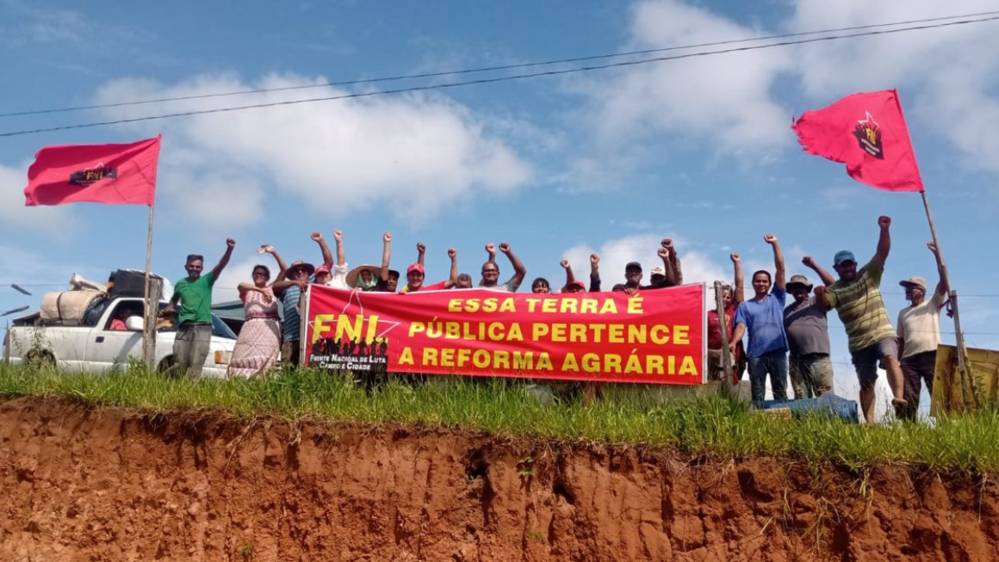
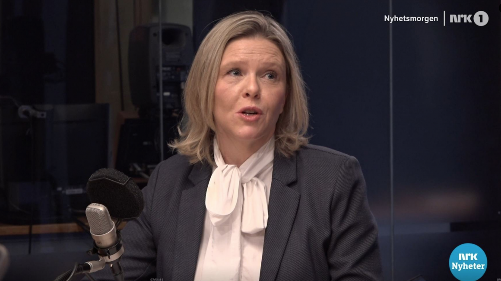
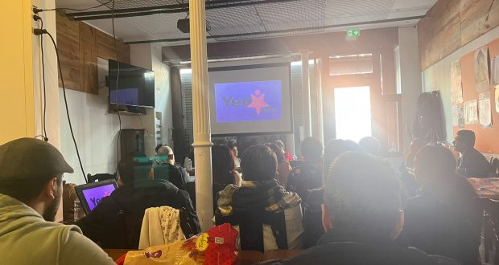
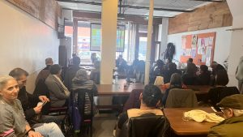
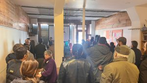

[This lan. PDF][This lan. ODT][This lan. MD][This lan. TXT][This lan. TXT LIST]
Please select your language 请选择你的语言:
Author: Rosa Minine
Description: A Sala Cecília Meireles, no Rio, abriu sua Temporada 2023 com um show do grupo vocal e percussivo Ordinarius, entrevistado na edição 247 do AND. O grupo é
Publish Time: 2023-03-12T00:05:00-03:00
Modified Time: None
Updated Time: None
Images: ['shP_kWSNeZo']
Section: Agenda Cultural
Tags: ['Agenda Cultural', 'grupo vocal e percussivo', 'Ordinarius', 'Sala Cecília Meireles', 'Sala Digital', 'Youtube']
Type: article
A Sala Cecília Meireles , no Rio, abriu sua Temporada 2023 com um showdo grupo vocal e percussivo Ordinarius , entrevistado na edição247 do AND. O grupo é formado por Augusto Ordine, Maíra Martins,Beatriz Coimbra, Fabiano Salek, Matias Correia e Antonia Medeiros. O eventoaconteceu no formato presencial e online, com transmissão através do canal daSala no YouTube, fazendo parte do projeto Sala Digital.
Abaixo: O show, realizado no último dia 04/03
Author: DEM VOLKE DIENEN
Time: 2023-03-12T18:15:09+00:00
Images: ['2023_Leipzig_Frauenkampftag-1.JPG', '2023_Leipzig_Frauenkampftag_Grünau.JPG']
Tags: ['BRD', 'Proletarischer Feminismus', 'Demonstration', 'Internationaler Frauentag', 'Rotes Frauenkomitee', 'Leipzig', 'Internationaler Frauenkampftag', 'revolutionäre Frauenbewegug']
Category: None
Wir ver offentlichen einen Bericht uber den Frauenkampftag in Leipzig, deruns zugeschickt wurde:
Auch in Leipzig fanden am 08. Marz mehrere Veranstaltungen anlasslich desFrauenkampftags statt. Darunter eine Demonstration mit kampferischen Ausdruck,die um 18 Uhr bei der Sachsenbrucke startete. Es waren ca. 50 Teilnehmer. Inden Redebeitragen wurde vor allem auf die Geschichte des 8. Marz Bezuggenommen. Unter anderem wurden Parolen gerufen, die den proletarischenFeminismus hoch hielten, sowie antiimperialistische Standpunkte. Es wurde dieArbeiterzeitung „Rote Post" verkauft und ungefahr 100 Flugblatter, auf denender Aufruf des Roten Frauenkomitees gedruckt war, verteilt. Die Demonstrationkonnte erfolgreich bis zum Endpunkt laufen.

Es gab ebenfalls Berichte, dass der Aufruf des Roten Frauenkomitee imArbeiterviertel Grunau und in der Universitat verbreitet wurde.

Source: https://www.demvolkedienen.org/index.php/de/t-brd/7540-08-maerz-in-leipzig
Author: prolcomra
Description: per servirsene nella costruzione di un regime moderno fascista al servizio dei padroni e del grande Capitale Stato (questure e prefetture), ...
Time: 2023-03-12T18:44:00+01:00
Images: ['fasci%20a%20Milano.jpg', 'antifa-sottosegretaria%20per%20ramelli.jpg', 'antifa-giardino%20della%20Memoria%20della%20scuola%20primaria%20Paini%20di%20Sondrio2.jpg', 'antifa-giardino%20della%20Memoria%20della%20scuola%20primaria%20Paini%20di%20Sondrio.jpg', 'antifa-targa%20Valerio.jpg', 'antifa-Gioia%20del%20colle.jpg', 'antifa-Lucca.jpg', 'topi-fascisti.jpg']
per servirsene nella costruzione di un regime moderno fascista al serviziodei padroni e del grande Capitale
Stato (questure e prefetture), istituzioni li coprono e questi sono alcunifatti di questi ultimi giorni che riportiamo di seguito.
E' evidente che "questo disgustoso rigurgito non passa da sè", come hagiustamente scritto la preside del liceo di Firenze. E' questo sistema indecomposizione che, per mantenere in piedi tutto il suo orrore quotidianofatto di guerre, migrazioni, sfruttamento, pandemie, reazione, oppressione oraha bisogno del fascismo, moderno nelle forme ma non nella sostanza, e rispondecon l'oltraggio del governo Meloni come via d'uscita al proprio fallimento.
Schiacciare l'"uovo del serpente" del fascismo al governo e dello squadrismofascista è il compito che abbiamo. Antifascismo militante e di massa,costruire il Partito comunista della Nuova Resistenza, il fronte unito, laforza combattente: l'esperienza storica del movimento operaio continua adinsegnarci questo

****>
Teste rasate, tatuaggi e porte chiuse. Un centinaio al radunodell'estrema destra a Milano
la repubblica 11 MARZO 2023
Attorno a un tavolo, davanti ai militanti, i leader della galassia neofascistasi riuniscono per un incontro dal titolo: "Prospettive per l'unità deipatrioti"
Sono un centinaio, in piazza Aspromonte 31, nella storica sede dell'estremadestra a Milano a due passi da piazzale Loreto. Ingresso vietato aigiornalisti. Attorno a un tavolo, davanti ai militanti, i leader dellagalassia neofascista si riuniscono per un incontro dal titolo: "Prospettiveper l'unità dei patrioti". Ma non
vogliono creare una "cosa nera", s'affrettano a dire dopo, anche se faranno"iniziative culturali insieme".
Divisi sul volto da dare al Governo Meloni, che va dal "7" al "6 meno meno",convinti che bisogna fare "di più" sul tema immigrazione, non proprioscandalizzati per la svastica apparsa sotto il nome della segretaria PdSchlein a Viterbo, visto che l'autore è stato definito semplicemente "unosciocco": eccoli, i camerati che si ritrovano sul marciapiede davanti a unparco dove bambini e ragazzi di ogni lingua giocano indifferenti, vicino a unasartoria gestita da un africano e un bar cinese. Sugli alberi, un cartello cheraffigura un omino gettare una svastica nell'indifferenziata.
Jeans, felpe, molte teste rasate. Pure tre ragazzi spagnoli sono arrivati perl'occasione. All'evento più "politico" della giornata partecipano Duilio Canudel "Movimento nazionale la rete dei patrioti", Luca Marsella di CasapoundItalia, Alessandro Cavallini di "Fortezza Europa", Alessandro Liburdi di"Lealtà azione" e Giordano Caracino di "Veneto fronte Skinhead".
"Sicuramente sull'immigrazione ci aspettiamo qualcosa di meglio, che questogoverno operi rimpatri immediati", aggiunge sul tema la portavoce di CasaPound Milano, Angela De Rosa. "Molti dei componenti di questa maggioranza digoverno hanno parlato della possibilità di fermare le partenze nei paesid'origine: ci aspettiamo che questo venga fatto, o almeno si pongano le basi".Voto all'esecutivo? "Sette, più della sufficienza".

La sottosegretaria all'Istruzione e deputata di Fratelli d 'Italia PaolaFrassinetti sarà all'Itis Molinari, l'istituto tecnico in zona Crescenzago,per prendere parte alla cerimonia di commemorazione del fascista SergioRamelli.
Stelle di David divelte e vasi distrutti, con i nomi dei bambini ebreideportati ad Auschwitz. E poi scritte razziste rivolte anche a un bambinoarrivato quest 'anno a scuola. Così è stato ridotto il giardino della Memoriadedicato ai bimbi ebrei deportati e uccisi ad Auschwitz della scuola primariaPaini di Sondrio.

A Brescia continuano le provocazioni dei fascisti davanti allescuole


Source: https://proletaricomunisti.blogspot.com/2023/03/pc-12-marzo-il-governo-meloni-spalanca.html
Author: LuigiLerisVIVE
Description: ...che significa di fatto avvallo alla politica imperialista, un'altro passo verso i sindacati confederali di regime, che rispetto alla Fran...
Time: 2023-03-12T18:46:00+01:00
Images: ['IMG-20230312-WA0003.jpg']
...che significa di fatto avvallo alla politica imperialista, un'altro passoverso i sindacati confederali di regime, che rispetto alla Francia rinuncianopure al ruolo di sindacato riformista con la mobilitazione dei lavoratoricontro i provvedimenti economici, appunto per non disturbare i profitti dipadroni e borghesia al potere.

un giusto commento
FASCISTI AL CONGRESSO DELLA CGIL: MAURIZIO LANDINI, VERGOGNATI!
L'edizione di venerdì dieci marzo del quotidiano telematico La nuova Padaniariporta, a firma di tale Cassandra, un articolo sul prossimo congresso dellaCgil, che si terrà a Rimini dal quindici al diciotto marzo prossimi: inparticolare si focalizza su alcuni dei personaggi che ne saranno ospiti.
Il redattore, del fogliaccio legato alla minoranza leghista che fa capo alsenatore Umberto Bossi,
informa i lettori che all'assise del maggiore sindacato italiano - quello cheun tempo era legato al Partito Comunista Italiano - saranno presenti alcune"sorprese".
Nella giornata di venerdì diciassette, a "deliziare" la folla dei delegatisarà il cardinale Matteo Maria Zuppi, presidente della Conferenza EpiscopaleItaliana; non sarà, però, il solo tizio totalmente fuori contesto ospite dellagiornata: prenderà la parola anche il Presidente del Consiglio dei Ministri
Se ancora c'era bisogno di una prova del fatto che la Cgil è - nella sostanza- un sindacato di destra, ci sembra che il fatto di aprire le porte dellapropria assise ad un'esponente proveniente dalla tradizione erede del fascismodovrebbe fugare ogni dubbio.
Il povero Giuseppe Di Vittorio si girerà sicuramente - sempre che ne abbiaancora la forza - nella tomba, così come tutti i martiri del regimemussoliniano, assassinati dalle squadracce in camicia nera durante ladittatura del Puzzone e dei suoi gerarchi.
Neanche può valere la giustificazione di Maurizio Landini: «a tutti icongressi della Cgil sono stati invitati i presidenti del Consiglio in carica.Non abbiamo mai avuto pregiudiziali verso alcun governo, siamo abituati amisurarci con i governi che ci sono».
Sembra che il sindacalista reggiano "dimentichi" che, fino ad oggi, non c'èmai stato un esecutivo con queste fattezze di estrema destra, guidato da unatizia che non si vergogna affatto del suo passato nel Movimento SocialeItaliano, erede del disciolto Partito Nazionale Fascista.
Bosio (Al), 12 marzo 2023
Stefano Ghio - Slai cobas per il sindacato di classe Alessandria/Genova
Source: https://proletaricomunisti.blogspot.com/2023/03/pc-12-marzo-lo-schifo-della-cgil-di.html
Author: prolcomra
Description: 12 Marzo 2023 Alarm Phone: “Decine di persone sul barcone alla deriva sono annegate” Il barcone con 47 persone a bordo, partito dalla Libia,...
Time: 2023-03-12T19:21:00+01:00
Images: ['migranti-altra%20strage.jpg']

12 Marzo 2023
Alarm Phone: "Decine di persone sul barcone alla deriva sono annegate"
Il barcone con 47 persone a bordo, partito dalla Libia, si sarebbe ribaltato."Dalle 2:28 dell'11 marzo, le autorità erano informate dell'urgenza e dellasituazione di pericolo".
L'imbarcazione è a 113 miglia NW Bengasi, è alla deriva, col motore in avaria,in balia delle onde
Siamo scioccati. Secondo diverse fonti, decine di persone di questa barca sonoannegate. Dalle h 2.28,
dell'11 marzo, le autorità erano informate dell'urgenza e della situazione dipericolo. Le autorità italiane hanno ritardato deliberatamente i soccorsi,lasciandole morire.
Dopo il letale naufragio, temiamo che i sopravvissuti - soccorsi da unmercantile dopo aver visto morire i loro amici - siano respinti forzatamentein Libia o Tunisia, dove li attendono condizioni disumane. Chiediamo che tuttii sopravvissuti siano portati in salvo in Europa!
Sea-Watch International: Dopo aver chiamato il centro di soccorso libico,hanno confermato che non avrebbero inviato una nave. Quando raggiungiamo dinuovo l'MRCC italiano con la domanda su chi assumerà il coordinamento e laresponsabilità delle persone, l'ufficiale responsabile riattacca.
Source: https://proletaricomunisti.blogspot.com/2023/03/pc-12-marzo-unaltra-strage-di-migranti.html
Author: DEM VOLKE DIENEN
Time: 2023-03-12T23:00:00+00:00
Images: ['2023_Berlin_Frauenkampftag-1_px.jpeg']
Tags: ['Frauenbewegung', 'BRD', 'Proletarischer Feminismus', 'Demonstration', 'Berlin', 'Rotes Frauenkomitee', 'Frauenstreik', 'Internationaler Frauenkampftag', 'revolutionäre Frauenbewegug']
Category: None
Wir ver offentlichen einen Bericht uber den Frauenkampftag in Berlin, der unszugeschickt wurde:
In Berlin fanden am 08. Marz zahlreiche Versammlungen statt, wobei mehreretausend Menschen auf die Straße gingen.
Eine Demonstration startete um 12:00 Uhr am Anton-Saefkow-Platz. Es nahmen vorallem junge Frauen an der Startkundgebung teil, aber auch bei Anwohner fandsie Anklang und es stellten sich welche dazu. Es wurde unter anderem dieArbeiterzeitung „Rote Post" verkauft und der Aufruf des RotenFrauenkomitees verteilt.
In den Redebeitragen wurde die doppelte Unterdruckung von Frauen, durchImperialismus und Patriarchat deutlich gemacht und gerechtfertigte Forderungenwie „gleicher Lohn fur gleiche Arbeit" gestellt, auch wenn stellenweise derKampf gegen das Patriarchat als etwas losgelostes vom Klassenkampf behandeltwurde, praktisch ein „Feminismus plus Klassenkampf"

Dieser Demonstrationszug gliederte sich als dritter Block, unter dem Namen„Class struggle is feminist's struggle", in die Großdemonstration ein, die um14:00 Uhr am Frankfurter Tor startete. Diese Versammlung war von einem breitenBundnis unter kleinburgerlicher Fuhrung organisiert, an dem eine große Zahl aninternationalen Gruppen beteiligt war. Eine genaue Teilnehmerzahl wurde nichtbekannt gegeben, aber es nahmen schatzungsweise mehr als 5000 Personen teil.Insgesamt wurden 2000 Flugblatter mit dem Aufruf des Roten Frauenkomiteeverteilt, welche von den Teilnehmern mit Interesse aufgenommen wurden. Auchwurden aus dem Demonstrationszug heraus 250 Sticker des Roten Frauenkomiteeentlang der Strecke verklebt. Der Endpunkt war um 19:00 Uhr dasFrauengefangnis Lichtenberg. Hier griff die Polizei die Endkundgebung an,weil der Lautsprecherwaagen „zu laut war", und nahm eine Person fest, welchelaut Angaben der Veranstalter, wieder freiist.Wie in dem Video zu sehen ist, schikanierten die Bullen vollig grundlos dieDemonstranten, welche nicht auf die Provokationen eingingen.
Source: https://www.demvolkedienen.org/index.php/de/t-brd/7541-08-maerz-in-berlin
Author: DEM VOLKE DIENEN
Time: 2023-03-12T23:30:00+00:00
Images: ['afd_2.cleaned.jpg', 'afd_3.cleaned.jpg', 'afd_4.cleaned.jpg', 'afd_5.cleaned.jpg', 'AFD_BaWue_Landesparteitag2023_01.cleaned.jpg']
Tags: None
Category: 'Europa2'
Rund um den kurzlich abgehaltenen Parteitag der AfD in Offenburg kam es zudurchaus kampferischen Protesten. Dabei sollen mehr als 50 Polizisten verletztworden sein. Nach offiziellen Angaben wurden sie getreten, geschlagen,erlitten weitere Angriffe und es wurden Brande gelegt.
Bei der Demonstration gegen den AfD-Landesparteitag im badischen Ortenaukreisam vorvergangenen Samstag wurden 53 Polizisten verletzt, erlitten Prellungenund Schurfwunden, weil sie geschlagen und getreten worden sein sollen. 17 vonihnen waren angeblich nach dem Einsatz nicht mehr diensttauglich.
Die Identitat von uber 400 Teilnehmern der Proteste wurde festgestellt, abernur wenige Verfahren wurden eingeleitet. In uber 200 Fallen kam es zuPlatzverweisen. Erhobene Vorwurfe lauten auf schweren Landfriedensbruch,Widerstand gegen Vollstreckungsbeamte und Korperverletzung.
Die Polizei hatte versucht, den Protestmarsch durch massiven Einsatz vonSchlagstocken zu stoppen. Insgesamt sollen zwischen 1.400 und 1.500 Personenan den Protesten teilgenommen haben.


Author: prolcompal
Description: La corsa sfrenata agli armamenti è oramai dichiarata esplicitamente da tutti i governi, dagli Stati Uniti, al Giappone, dalla Cina all’Austr...
Time: 2023-03-13T06:48:00+01:00
Images: ['epf.jpg']

La corsa sfrenata agli armamenti è oramai dichiarata esplicitamente da tutti igoverni, dagli Stati Uniti, al Giappone, dalla Cina all'Australia, dalla Coreadel Sud all'India… che direttamente o indirettamente, sono coinvolti nellaguerra interimperialista per procura che è attualmente in corso in Ucraina.
Nei giorni scorsi anche l'Unione Europea ha trattato il problema, soprattuttoper il rifornimento di armi e munizioni all'Ucraina, e siccome mira pure al"risparmio", ha deciso il " piano di acquisti congiunto di armi perl'Ucraina". Nell'attesa delle decisioni definitive "la Commissione europea stastudiando meccanismi per aumentare la capacità di produzione dell'industriaeuropea ".
Una delle motivazioni per questa accelerazione è la seguente: "'Abbiamoricevuto l'urgente richiesta
ucraina di nuove munizioni di 155 millimetri', ha spiegato ieri a ungruppo di giornalisti il commissario al mercato unico all'industria ThierryBreton " scrive il Sole 24 ore dell'8 marzo scorso. L'urgente richiesta,dicono gli ucraini, è perché " Verrebbero sparate fino a 300-400milapallottole al giorno. "
"Più in generale, ha aggiunto il commissario, il tentativo dei paesi membrideve essere 'di mutualizzare un po' di più', un settore, quello militare, cheè stato ostaggio per decenni degli interessi prettamente nazionali." Insomma,bisogna trovare un po' di soldi in più per dare più armi all'Ucraina. Èprevisto, secondo il piano, che i "Ventisette trasferiscano a Kiev parte deiloro depositi di munizioni." Mentre la proposta per i soldi è quella " diusare un miliardo proveniente dal Fondo europeo per la pace (EFP - EuropeanPeace Facility) per rimborsare fino al 50-60% del materiale inviatoall'ucraina dai paesi membri."
L'assurda "giustificazione" dell'utilizzo di questo Fondo, fuori bilancio, èche "… i Trattati proibiscono di utilizzare denaro proveniente dal bilanciocomunitario per finanziare attività militari. "
L'interesse prettamente economico viene dichiarato esplicitamente: " Ilmateriale acquistato dovrà essere europeo. I primi ordini potrebberoaggiungere già in maggio. Spiegava ieri il commissario Breton: ' Abbiamoindividuato 15 imprese produttrici di munizioni da 155 millimetri in 11 paesi'".
Questo perché i "Ventisette" si sono accorti che " L'industria europea non èpronta alle esigenze di un conflitto ad alta intensità" per cui "ènecessario aumentare le capacità di produzione." ****
Secondo il commissario europeo al mercato unico all'industria Thierry Breton:" Abbiamo i siti produttivi e l'expertise. Dobbiamo aumentare le economiedi scala ... Tra le altre cose, Bruxelles vuole adottare ' contratti certi'con le imprese della difesa; 'monitorare gli sforzi compiuti daiproduttori'; ' risolvere i colli di bottiglia, soprattutto nella catena diproduzione ".
Queste sono dichiarazioni di guerra (per la concorrenza!) nella guerra vera epropria, ed è dovuto a questo l'avvertimento del commissario Breton: " Lanostra industria della difesa deve passare rapidamente alla modalità di unaeconomia di guerra".
Questo sempre più acceso accanimento per la guerra, che significa anche ilprosciugamento del "Fondo per la pace", significa, non ci sarebbe nemmenobisogno di dirlo, l'aumento del Fondo per la guerra con i conseguenti taglialle spese sociali.
Source: https://proletaricomunisti.blogspot.com/2023/03/pc-13-marzo-la-nostra-industria-della.html
Author: maoist
Description: Erano finiti sotto accusa per aver occupato i locali di una Chiesa a Claviere e poi la Casa Cantoniera di Oulx. «Un’innegabile funzione d...
Time: 2023-03-13T07:00:00+01:00
Images: []
Erano finiti sotto accusa per aver occupato i locali di una Chiesa a Clavieree poi la Casa Cantoniera di Oulx. «Un'innegabile funzione di supporto alleiniziative lecite organizzate da istituzioni e privati nel campodell'assistenza»
L'occupazione si è tradotta in «un'innegabile funzione di supporto alleiniziative lecite organizzate da istituzioni e privati nel campodell'assistenza e dell'accoglienza dei migranti». In pratica, gli anarchicihanno agito «in modo complementare» al mondo dell'associazionismo. Adassegnare questo ruolo ai giovani antagonisti che nel 2018 entraronoabusivamente nella Casa Cantoniera dell'Anas, trasformandola in un centro diaccoglienza per i migranti intenzionati a raggiungere la Francia passandoclandestinamente il confine, è il giudice Alessandra Danieli. Ilmagistrato, infatti, ha assolto 19 attivisti che -- a vario titolo -- eranofiniti sotto accusa per aver occupato prima i locali della Chiesa dellaVisitazione di Maria Santissima di Claviere e, successivamente allo sgombero,la Casa Cantoniera di Oulx, un immobile che Anas aveva lasciato in stato diabbandono.
Nelle motivazioni vengono ripercorse le storie delle due occupazioni, masoprattutto le attività degli
antagonisti. L'indagine dei carabinieri raccontava le iniziative intraprese,tra il 2018 e il 2021, da alcuni giovani legati al gruppo francese «Briser lesFrontières» e all'area antagonista della Valle di Susa e di Torino. Cioè,attività di «sostegno e assistenza ai migranti» intenzionati a oltrepassare ilconfine francese. Due le rotte seguite e citate nel documento : la prima(poi abbandonata) attraverso il Colle della Scala a Bardonecchia, la secondaattraverso il valico tra Claviere e Monginevro. Ed è proprio in relazione aquest'ultima direttrice che vanno lette le azioni illecite rimproverate agliimputati. Il giudice ricorda che nel 2018 a Oulx venne aperto il RifugioMassi, una struttura gestita da religiosi dell'ordine salesiano e finanziatada una fondazione.
«In tale contesto -- scrive il Tribunale -- si collocano le iniziativeintraprese da alcuni aderenti a movimenti di matrice anarchica in ordinealla causa di sostegno ai migranti e di contestazioni alle politichegovernative in materia di flussi migratori». Da qui l'occupazione prima dellaChiesa e poi della Casa Cantoniera «per permettere ai migranti, chequotidianamente tentavano di raggiungere il territorio francese attraverso ilvalico del Monginevro, di trovare riparo dal freddo durante la notte».
Per il giudice non vi è alcun dubbio sulla sussistenza del reato , inparticolare per quanto riguarda l'occupazione della Casa Cantoniera: gliimputati sono stati più volte notati dalle forze dell'ordine mentre entravanoe uscivano dall'edificio, così come è accertata la loro partecipazionenell'allestimento della struttura «al fine di consentire di ospitarestabilmente al suo interno decine di persone». In sentenza si fa anche notareche «all'epoca dei fatti la struttura salesiana era aperta solo di notte epoteva ospitare solo 20-30 persone. Accadeva di frequente che alcuni migranti,dopo aver trascorso una notte al Rifugio, si trasferissero alla CasaCantoniera, dove potevano trattenersi per diversi giorni e dove, in diverseoccasioni, trovavano ospitalità famiglie con bambini».
Tuttavia, il Tribunale respinge la tesi assolutoria proposta dalla difesa, che si era appellata allo «stato di necessità» interpretato come assistenzadi migranti spesso impreparati ad affrontare la montagna per oltrepassare ilconfine. Piuttosto, secondo la giudice Danieli, l'assoluzione deve essereincardinata nel principio della «lieve entità» del reato. Gli anarchiciavrebbero sì occupato l'immobile dell'Anas -- «in disuso da anni» --, ma anchesvolto «un'innegabile funzione di supporto» a chi era impegnato lecitamentenell'assistenza ai migranti.
Source: https://proletaricomunisti.blogspot.com/2023/03/pc-13-marzo-occuparono-una-casa-18.html
Author: maoist
Description: Operaio Ansaldo ferito, quattro persone indagate Simone Bonori era stato c...
Time: 2023-03-13T07:30:00+01:00
Images: ['sciopero-incidente-simone-bonori-791287.large.jpg']
Simone Bonori era stato colpito da un pezzo che si era sganciato dal tornio,una macchina del 1980, e aveva sfondato la paratia di protezione
GENOVA - Sono quattro gli indagati per l'incidente ad Ansaldo Energia,avvenuto a fine febbraio nella fabbrica genovese nel quale è rimasto feritoin modo grave Simone Bonori, operaio di 36 anni. L'accusa è lesioni colposegravissime. L'uomo è ancora in coma farmacologico all'ospedale San
Martino. La procura ha iscritto i responsabili della sicurezza e i prepostidel reparto Meme (Media meccanica) per consentire loro di partecipare allaperizia che verrà disposta la settimana prossima. A eseguirla sarà uningegnere di Torino. Subito dopo l'incidente il procuratore aggiunto FrancescoPinto e il sostituto Giuseppe Longo avevano fatto un sopralluogo nel reparto eavevano sequestrato il macchinario.
Simone Bonori era stato colpito da un pezzo che si era sganciato daltornio , una macchina del 1980, e aveva sfondato la paratia di protezione. Isindacati avevano puntato il dito sulla vetustà dei macchinari. Dalle indaginisarebbe emerso che il pezzo era agganciato con due bulloni anziché quattro. Laperizia servirà ad approfondire se il macchinario fosse adeguatamentemanutenuto e in buone condizioni ma anche per capire l'adeguatezza dellaparatia di protezione sfondata dal pezzo che si è staccato dal tornio: erastato trovato un rinforzo rivettato che forse potrebbe non essere stato adattoper reggere a un carico eccessivo.

GENOVA - Tristezza, rabbia, sconforto, preoccupazione. Sono questi isentimenti che provano i colleghi di Simone, l'operaio di 37 anni che stalottando tra la vita e la morte all'ospedale policlinico San Martino diGenova, dopo l'incidente di ieri pomeriggio, martedì 21 febbraio ndr, nellafabbrica di Ansaldo Energia. Il lavoratore è stato colpito alla fronte daun pezzo di 200 chili staccatosi da un vecchio tornio verticale del 1979: ilmateriale di ferro ha sfondato una paratia, centrando l'uomo al volto .
"Il ragazzo stava facendo il suo lavoro, era nel posto in cui doveva essere,ma dobbiamo pensare che un macchinario vecchio degli anni '70 non è fattibilee pensabile che si trovi all'interno di un'azienda come Ansaldo Energia.Chiediamo investimenti serie, fatti e non parole". Così Andrea Capogreco,Rsu Fim Cisl Liguria di Ansaldo Energia , testimone di quanto accaduto negliattimi dell'incidente.
" Io ero lì a fianco, ho assistito alla tragedia, questa notte non hodormito, continuavo a vedere quella scena davanti ai miei occhi , si ètrattato di un'immagine che non auguro a nessuno - racconta a PrimocanaleCapogreco -. Sono corso subito, in un minuto ero lì. Ho provveduto a vederecosa potevo fare per il ragazzo ma ho assistito a una scena raccapricciante. Ènecessario avere delle certezze e delle sicurezze quando si viene sul posto dilavoro. Se quel macchinario che nel '79 poteva essere gioiellino, oggi nel2023 non lo è".
La giornata dei lavoratori Ansaldo non si può concludere con un corteo ealcune ore di sciopero , lo spiega e lo annuncia in modo fermo e decisoAndrea Capogreco. "Vogliamo rassicurazioni per la nostra sicurezza, non solosu quel macchinario ma anche sugli altri. Noi su macchinari così datati nonlavoriamo più, incrociamo le braccia. O le mettono in sicurezza oppure noi cifermiamo. Si tratta di macchine troppo obsolete, o le sostiuiscono o noi nonlavoreremo più".
Source: https://proletaricomunisti.blogspot.com/2023/03/pc-13-marzo-gli-operai-dellansaldo.html
Author: SERVIR AL PUEBLO
Publish Time: 2023-03-13T09:52:26+00:00
Modified Time: 2023-03-13T09:52:26+00:00
Description: Activistas y colaboradores del periódico «Servir al Pueblo» en Madrid han realizado actividades de propaganda en relación al Día de Internacional de la Mujer Trabajadora en 2 de las principales uni…
Images: ['3.jpeg', '17.jpeg', '1.jpeg', '14.jpeg', '5.jpeg']
Type: article
13/03/2023
Activistas y colaboradores del periódico «Servir al Pueblo» en Madrid hanrealizado actividades de propaganda en relación al Día de Internacional de laMujer Trabajadora en 2 de las principales universidades de la ciudad. Laprincipal acción fue un panfleteo en la Universidad Complutense, en el que losalumnos que salían al medio día de la facultad de Geografía e Historiarecibieron el texto de Servir al Pueblo, en el que se enfatiza el carácter declase del 8M, se denuncia la hipocresía de la burguesía al reivindicarlo y sellama a convertirlo en día de lucha de las mujeres trabajadoras, organizadasde forma independiente a sus explotadores. Además de esto, varias facultadesde la UCM y de la Universidad Autónoma de Madrid se empapelaron con pegatinasde la revista y con los panfletos.
Artículo enviado por un colaborador


Anuncio publicitario
Author: SERVIR AL PUEBLO
Publish Time: 2023-03-13T09:57:27+00:00
Modified Time: 2023-03-13T09:57:27+00:00
Description: Compartimos algunas fotografías de un importante evento en Francia donde los camaradas han presentado al Comité Femenino Popular.
Images: ['imagen.png', 'imagen-1.png', 'imagen-2.png', 'imagen-3.png', 'imagen-4.png']
Type: article
13/03/2023
Compartimos algunas fotografías de un importante evento en Francia donde loscamaradas han presentado al Comité Femenino Popular.


Anuncio publicitario
Author: fannyhill
Description: Le stragi in mare continuano. Al largo delle coste libiche un nuovo naufragio ha fatto nuove vittime. Anche qui l’iter è stato quello di sem...
Time: 2023-03-13T10:26:00+01:00
Images: []
Le stragi in mare continuano. Al largo delle coste libiche un nuovo naufragioha fatto nuove vittime. Anche qui l'iter è stato quello di sempre, barcone indifficoltà, navi libiche in vicinanza che non sono in grado di salvare metàdei migranti, appelli, avvisi inutili a navi e barche nella zona senza alcunrisultato, volente o nolente.
Uno scenario che dall'avvenire, per quanto infame, di tanto in tanto, orarischia di divenire quotidiano e permanente, visto che i Servizi segreti diquesto governo parlano di migliaia in arrivo.
Il fatto è che li vedono arrivare e li vogliono cacciare, respingere, farmorire.
Questa è l'unica verità che va affermata a livello di informazione e di massa.Questo governo vuole la morte dei migranti in mare.
Questo governo fa il summa, in peggio, di tutte le leggi antimmigrati, dallaTurco/Napolitano, alla Bossi/Fini, all'osceno periodo di Minniti che ha fattocarriera, oggi è nell'industria bellica, all'azione criminale di Salviniministro degli Interni. Quando riusciremo a "fare la pelle" a persone così.
Altro che abolizione delle leggi, non ne hanno nessuna intenzione, ne voglionofare nuove e peggiorative contro i migranti che arrivano e quelli già arrivatia cui vogliono rendere sempre più la vita difficile, cacciarli, metterli nelmirino di una vera e propria guerra.
Questo governo è fascista, razzista, imperialista e neo colonialista, i suoiministri, i suoi sottosegretari, i suoi attivisti sono impregnati di questaideologia. Come fascisti trasformano tutto in repressione e dittatura, inarroganza e arbitrio; come razzisti godono della morte dei migranti diun'altra razza. Hanno un solo limite, quello di dover difendere gli interessidei padroni, della borghesia imperialista che hanno
bisogno di centinaia, di migliaia di migranti da sfruttare, schiavizzare,ricattare per il buon andamento della produzione, per la riduzione del costodel lavoro, per stare nella concorrenza mondiale, per fare profitti. E ilgoverno è al loro servizio, non tutto può fare secondo la propria ideologia esi deve mettere un freno alla politica che nel suo cuore e nella sua mentevorrebbe fare. Deve stare dentro l'Europa perchè se viene marginalizzatol'economia capitalista del paese aggrava la sua crisi.
Per questo è chiaro che dobbiamo lottare contro questo governo e la sua naturaspecifica e contro la classe dominante, il sistema capitalista.
Ma lottare è altra cosa di quello che sta succedendo. Contro questo governonon c'è nessuna vera lotta in realta', nessuna consapevolezza se non a paroledella sua natura, nessuna volonta' di cambiare le carte in tavola.
La manifestazione di Cutro è stata giusta e necessaria, ma più espressione diuna testimonianza e un sentimento, che è bene che ci sia stato per esserevicini ai familiari delle vittime, ai sopravvissuti, per mettere una diga, permostrare l'irriducibile contraddizione dei Meloni/Salvini e i suoi luridiMinistri che sono andati a Cutro ma per rivendicare la morte dei migranti epianificare le future morti - è questo che impediva loro anche di far finta diandare ad onorare le vittime. Quel Consiglio dei ministri è stato un atto diautoaccusa, potremmo dire alla maniera "mussoliniana", un "ebbene si'"... epoi via a festeggiare con karaoke a casa Salvini.
Dall'altra parte c'erano i circa 5mila che hanno raggiunto la spiaggia, checomunque testimoniavano l'esistenza di un'altra Italia, non ancora basatasulle classi, ma basata sull'enorme divario tra progresso e reazione, barbariee umanita'.
Ma anche a Cutro le cose non sono andate davvero bene.
Scrive il Manifesto: " Mimmo Lucano guidava la manifestazione"; che schifoquesti riformisti e anime belle del riformismo anche radicale, sempre a cacciadi personaggi e in prospettiva di nuovi candidati, sempre a non guardare maialla sostanza delle cose, ad essere l'altra faccia della medaglia, la routinedel riformismo, dell'ala disarmata del riformismo che vuole essere opposizionema che è compagno di strada del moderno fascismo che avanza.
Ma a Cutro almeno qualcosa c'è stato, altrove no.
E qui non parliamo dei partiti politici che non esistono se non come parti delteatrino della politica nel parlamento nero a maggioranza fascio/razzista, madelle organizzazioni sindacali, alcune allineate e coperte col governo, laCisl, altre avvolte nel neo corporativismo compatibile alla fine col modernofascismo, la Uil, altre ancora, la Cgil, immersa nell'ipocrisia: un bel numerodi attivisti della zone vicine, da Puglia in giù, a Cutro c'è stato, ma tuttoquesto mentre la sua burocrazia, il suo segretario annunciava come se fosseuna cosa normale che la Meloni è invitata al suo congresso nazionale. Ailavoratori, in particolare di questo sindacato abbiamo tanto da dire; ai lorodirigenti, a Landini in prima persona, invece abbiamo tanto da fare perrendergli difficile il gioco sporco che dal primo giorno dell'insediamento delnuovo governo questo signor Landini e questo sindacato fanno.
Poi ci sono i partiti parlamentari, le anime belle del riformismo, le cordatelegate alla grande stampa, in dissenso con il nuovo governo o in alcuniaspetti della sua politica, da cui non possiamo aspettarci altro. Sappiamo chenon sono parte della soluzione ma parte del problema, e che da loro nonpossiamo che aspettarci furenti articoli sui giornali e pratica meschina dichi fa parte della stessa classe. Anche se non c'è limite a tutto. Come fa aguardarsi allo specchio una Concita De Gregorio, capintesta delle sdoganatricidella Meloni definita una "fuoriclasse" da cui la sinistra dovrebbe imparare,a riempire poi le pagine del suo giornale del lamento per l'oscenarappresentazione che Meloni e il suo governo hanno fatto in occasione diCutro?
Quello che però non ci sta per niente bene è la posizione generale delle forzedell'opposizione reale. Il sindacalismo di base e di classe, i gruppiantagonisti e di matrice autonoma, le forze comuniste, i movimenti di lottaper la casa a Roma, per il lavoro a Napoli che ben poco hanno detto e ancormeno hanno fatto in occasione di questa strage di Cutro, come verso altripassi feroci di questo governo e dei suoi ministri, Valditara, Nordio, illurido servo dell'industria bellica, Crosetto (e via via tutti gli altri nomiincasellati in questo "gabinetto" che è un vero "cesso").
Si continua con il solito tran tran, di lotte che si pretendonoautosufficienti, che si pretendono "politiche" ma che proprio la politica nonc'è; non c'è l'analisi scientifica, militante e arrabbiata, ma l'aria fritta.Troppa parte di questo mondo fa fatica a chiamare fascisti i fascisti e ogniattacco a questo governo non trova di meglio che sfornare l'ultima riedizione:"...ma Draghi e il Pd?...", pensando cosi' di essere acuti e nondemenzialmente indifferentisti, una deviazione dal marxismo leninismo maoismoche è scienza della politica e della lotta di classe, che è arma affilata permisurarsi con la dinamica della lotta di classe, per analizzare governi,partiti e uomini del governo e dei partiti.
Questo è il lato negativo della contraddizione della lotta di classe e lanecessita' della lotta tra le due linee nel nostro campo.
Noi comunisti, noi proletari d'avanguardia dobbiamo attrezzarci all'unicasoluzione e all'unica forma di lotta strategica rispetto a questo governo e aquesto stadio del capitalismo e dell'imperialismo che è guerra, fascismo,immiserimento delle masse, a cui si può rispondere solo con la guerra diclasse, l'organizzazione per la guerra civile e rivoluzionaria.
A questo serve il partito, a questo serve il fronte unito, a questo serve laforza militante.
Certo, tutti questi strumenti e questa prospettiva strategica va riempita diclasse e masse, perchè senza classe e masse si è profeti disarmati; ma classee masse necessarie allo scopo è quella che si trasforma combattendo, è quellache incarna uno slogan degli anni '70 che deve tornare forte e chiaro: "nessun lamento, linea di condotta Combattimento!".
E su questo qualcosa ci insegnano i compagni anarchici impegnati nellabattaglia per Alfredo, ma tanto ci insegna la nostra storia, dalla Resistenza,al 68/69 anni 70, alla nuova Resistenza.
Sono cose che non sono da collocare in un futuro, sono da collocare nelpresente, dal piccolo al grande, dal locale al nazionale, per aprire e faravanzare il cammino tortuoso di un sentiero luminoso.
Source: https://proletaricomunisti.blogspot.com/2023/03/pc-13-marzo-governo-e-migranti-cutro.html
Author: SERVIR AL PUEBLO
Publish Time: 2023-03-13T10:29:14+00:00
Modified Time: 2023-03-13T10:30:51+00:00
Description: Compartimos la nota del Movimiento Antirrepresivo de Madrid (@AntirrepreMadrid en twitter) sobre la detención producida a dos personas tars la manifestación del 8M.
Images: ['imagen-5.png']
Type: article
13/03/2023
Compartimos la nota del Movimiento Antirrepresivo de Madrid (@AntirrepreMad entwitter) sobre la detención producida a dos personas tars la manifestación del8M.

Anuncio publicitario
Source: https://serviralpuebloperiodico.wordpress.com/2023/03/13/dos-detenidos-el-8m-en-madrid/
Author: SolRojista (Person)
Publisher: Blogger (Organization)
Description: Internacional. Las protestas por el Día Internacional de la Mujer Trabajadora han tomado las calles y plazas en decenas de ciudades a...
Publish Time: 2023-03-13T10:34:00-07:00
Modified Time: 2023-03-13T10:35:50-07:00
Images: ['8m_3.limpio.webp', '2023-03-07T132625Z_1296576294_RC21PZ9S68IR_RTRMADP_3_FRANCE-PENSIONS-STRIKE.webp', '6d0f40_170ac0bab97d4d0784c61a7bee8d41ef~mv2.jpg', '22cdf30fc57a0a016d7bf1d8b82a5add01af68e8w-780x470-1.jpg', 'el%20istmo%20es%20nuestro%20SR.jpg']

Internacional. Las protestas por el Día Internacional de la MujerTrabajadora han tomado las calles y plazas en decenas de ciudadesalrededor del mundo; con más fuerza que en otros años las mujeres clasistas yrevolucionarias siguen pugnando por recuperar el significado de este díareorientando la lucha de las mujeres trabajadoras de ciudades y campos, asícomo de estudiantes y jóvenes, no como una lucha entre géneros sino como unalucha de clases. De esta manera, junto a las reivindicaciones contra laviolencia patriarcal se han vuelto a escuchar las históricas consignas contrala propiedad privada de los medios de producción, contra la explotación delhombre por el hombre, de la mujer por el hombre, de la mujer por la mujer ydel género humano en su conjunto así como en contra la represión y elcolonialismo. Tanto en países desarrollados como en países oprimidos, lasmujeres toman las calles uniendo a veteranas y novatas que en más de unaocasión y en más de un país han debido responder golpe por golpe los ataquesde la reacción. Se registraron enfrentamientos entre contingentes de mujeres yfuerzas represivas en Turquía, México, Palestina, Suiza, Sri Lanka, y otraslatitudes.

Francia. La huelga general sacude al país. Nuevamente la clase obrera hatomado las calles mostrando el peso de su fuerza organizada y su papel devanguardia al frente de las clases populares con el paro del pasado 7 demarzo. Una marea de 3.5 millones de personas han marchado por todo el país enla sexta demostración que desde enero a la fecha convoca a desatar la huelgapolítica general contra el régimen de Macron, que no quiere dar marcha atrásen sus pretensiones antiobreras de modificar la edad de jubilación de lostrabajadores con su contrarreforma de pensiones. Este ataque contra la claseobrera es la punta del iceberg pues se sabe que la oligarquía después vendrápor todo. Así lo entiende el proletariado francés que, pese a las direccionessocialdemócratas y del sindicalismo amarillo (o charrismo sindical), mantieneen alto las banderas de la huelga.

Grecia. La tragedia ferroviaria del accidente ocurrido la madrugada del 28feb-1 mzo. que dejó al menos 57 personas fallecidas, ha destapado la cloaca decorrupción y negligencias tras la privatización de TRAINOSE durante elgobierno de SYRIZA cuyos méritos de "izquierda legal" son idénticos a los decualquier otra plataforma demo-liberal burguesa. Desde entonces se hanreproducido varias manifestaciones en Atenas y otras partes del país,denunciando la red de complicidades y omisiones en el "tren de la muerte"; lamás grande de todas se ha registrado el pasado 8 de marzo en el marco del DíaInternacional de la Mujer Trabajadora, las protestas se convirtieronrápidamente en una huelga general combativa, siendo la más grande durante losúltimos diez años. Para este jueves está convocada una nueva huelga general de24hrs. y nuevamente se preveen enfrentamientos con la policía antimotines.

Palestina. Esta ha sido una semana especialmente violenta; los cerdossionistas han atacado y asesinado palestinos en distintas operacionesmilitares. El pasado 7 de marzo las tropas mercenarias del ejército de Israeltomaron por asalto dos campamentos de refugiados, uno en Yenin y otro enNablus; ahí asesinaron a 6 jóvenes e hirieron a otros 10; de estos heridos, eljoven Walid Nassar de 14 años falleció hospitalizado dos días después el 9 demarzo; ese mismo día dos niños palestinos de 8 y 9 años respectivamente fueronsecuestrados por el odioso ejército israelí mientras se dirigían a su escuela.Un día después, 10 de marzo, como cada viernes las masas del heroico pueblopalestino tomaron las calles de distintas ciudades exigiendo el cese de laocupación, lo que derivó en nuevos enfrentamientos. En Qalqilya fue asesinadoAmir Mamun Odeh de 16 años. En lo que va de este año se estima que Israel haasesinado al menos a 80 personas, entre ellas 13 niños y una mujer. ¡ Fuerasionistas de Palestina!

México. A las más recientespretensiones de intervención militar delimperialismo yanqui sobre México con el discurso de "combatir al narco", seagrega la anunciada visita a tierras oaxaqueñas de los reaccionarios JhonKerry y Ken Salazar, enviado especial sobre el clima y embajador de EEUU enMéxico, respectivamente. Esta visita programada para el 21 de marzo (apropósito del natalicio de Benito Juárez) busca "supervisar" los avances en laimposición del Corredor Interoceánico del Istmo de Tehuantepec (CIIT), dondelos "más recientes logros de AMLO y la 4T" son la militarización de la región,el estado de sitio impuesto contra campesinos y ejidatarios Ajyuuk, lacriminalización y ordenes de aprehensión contra comuneros Binniza´ de PuenteMadera, y la persecución, terror y amenazas contra comuneros Binniza´ de SantaCruz Tagolaba en Tehuantepec. La pinza formada entre la Secretaría de Marina,Guardia Nacional, Agencia Estatal de Investigaciones, Policía Estatal y gruposparamilitares como el del mercenario "Tacho Canasta" buscan doblegar la férreavoluntad de campesinos pobres e indígenas organizados en torno a la Unión deComunidades Indígenas de la Zona Norte del Istmo (UCIZONI), Asamblea dePueblos Indígenas del Istmo en Defensa de la Tierra y el Territorio (APIIDTT)y Corriente del Pueblo Sol Rojo (CP-Sol Rojo). En solidaridad con esta luchade resistencia en contra la imposición del CIIT y en repudio a la visita(injerencia) del imperialismo yanqui en el Istmo, diversas organizacionesdemocráticas y colectivos están convocando a la realización del Festival porla Vida y en Solidaridad con los Pueblos del Istmo; la cita es el próximo 21de marzo de 2023 en la embajada gringa en CDMx. Así mismo se esperan accionesterritoriales por parte de las comunidades afectadas que rechazan el CIIT ylas declaraciones de la nueva intervención militar en nuestro país.
Source: http://solrojista.blogspot.com/2023/03/breves-iniciando-semana_13.html
Author: SERVIR AL PUEBLO
Publish Time: 2023-03-13T10:40:53+00:00
Modified Time: 2023-03-13T10:40:53+00:00
Description: El 7 de marzo tuvo lugar otra huelga general contra la reforma de las pensiones prevista. Millones participaron. Fue el sexto de su tipo. Los revolucionarios proletarios participaron en las activid…
Images: ['imagen-6.png', 'imagen-7.png', 'imagen-8.png', 'imagen-9.png', 'imagen-10.png', 'imagen-11.png', 'imagen-12.png', 'imagen-13.png', 'imagen-14.png', 'imagen-15.png', 'imagen-16.png', 'imagen-17.png', 'imagen-18.png', 'imagen-19.png']
Type: article
13/03/2023
El 7 de marzo tuvo lugar otra huelga general contra la reforma de laspensiones prevista. Millones participaron. Fue el sexto de su tipo. Losrevolucionarios proletarios participaron en las actividades en diversasformas.
La Ligue de la Jeunesse Révolutionnaire y el recién fundado Comité FemeninoPopular participaron en una manifestación el 7 de marzo, que reunió a unas70.000 personas, ¡para una manifestación decidida que fue capaz de hacerretroceder a la policía varias veces!
El Jeunesse Révolutionnaire de Limoges, París y Clermontferrand participó enbloqueos y manifestaciones el 7 de marzo. En París, participaron en el bloqueodel Lycée Henri Wallon y luego en la manifestación, ¡llevando consignasmilitantes consigo! En Limoges se podía ver una impresionante punta roja de lamarcha, encabezada por los jóvenes, Cause du Peuple y FSE Limoges. ¡Loscamaradas también desplegaron una gran pancarta!
En Saint-Étienne, activistas de la Ligue de la Jeunesse Révolutionnaire y laCGT Privés d'Emploi et Précaires estuvieron en el mercado de Bellevue paramovilizarse por la huelga del 7 de marzo. En Grenoble, los activistas de CPESse unieron a la huelga de los trabajadores en los barrios de Villeneuve-Malherbe y a la marcha de los residentes para hacer oír la ira de los barriosobreros contra esta reforma.
En Caen y Rennes, la Jeunesse Révolutionnaire celebró un día de lucha el 7 demarzo. En Caen, los camaradas participaron en bloqueos estudiantiles en lasescuelas Charles de Gaulle y Laplace y luego dirigieron una manifestacióndecidida de la juventud revolucionaria.
Linkoriginal:https://demvolkedienen.org/index.php/de/46-nachrichten/europa2/7542-generalstreik-in-frankreich. Traducción propia


Anuncio publicitario
Source: https://serviralpuebloperiodico.wordpress.com/2023/03/13/huelga-general-en-francia/
Author: fannyhill
Description: Il PD rinasce dalle sue ceneri e si ricostruisce esattamente nella stessa maniera. La Schlein , di classe medio borghese, da sempre nei din...
Time: 2023-03-13T10:41:00+01:00
Images: ['download.jpg']

Il PD rinasce dalle sue ceneri e si ricostruisce esattamente nella stessamaniera.
La Schlein, di classe medio borghese, da sempre nei dintorni e dentro questopartito, era gia' vice di Bonaccini senza che questo avesse costituito alcunsfracello per la linea reazionaria portata dal Pd, puntello di tutti governi esocio di maggioranza del governo Draghi e ancella del governo fascio/razzistadei padroni della Meloni.
La catarsi delle primarie ha prodotto un "popolo del cambiamento", mafrancamente si tratta di un popolo bue, cieco all'evidenza, ancora allaricerca del personaggio che risollevi il partito, ruota di scorta dellaborghesia e organizzatore del consenso delle masse alla borghesia.
Questa ventata futile di rinnovamento è al servizio del sistema, dove ilsistema, però, si autotrasforma in
corso d'opera, in sempre più dispiegato moderno fascismo.
E invece di un'opposizione, sia pur parlamentare, democratica, costituzionale,antifascista, abbiamo un orgia di parole, di volti sorridenti mentre la gentemuore (non c'è solo l'insultante karaoke di Salvini/Meloni, ma anche questi"giulivi cantanti" che si auto inneggiano, ridono e si abbracciano, siautoriformano in maniera grottesca).
La Schlein è segretaria e Bonaccini è presidente, una sorta di scimmiottaturaal rovescio della Regione Emilia Romagna, e insieme tutta una serie di "voltinuovi" di cui riempi' Renzi il partito provocandone l'ennesima versione delcambio di natura.
Si potrebbe fare uno screaming del nuovo organigramma della Schlein ma sarebbeun esercizio "tanto per la precisione" ma che nulla aggiungerebbe al vuoto, incui dicendo le stesse cose della campagna elettorale di Letta, considerata datutti molto a sinistra, si dovrebbe verificare il miracolo di un partito diopposizione popolare, almeno popolare...
I proletari, per favore, qui non c'entrano nulla, se non nella cinghia ditrasmissione della burocrazia sindacale della Cgil.
Si scrive che tanti si sono iscritti al partito, alcuni reiscritti ma lamaggioranza sarebbe di gente che non si è mai iscritta o che non facevapolitica. Tutte cose che in questa mistura sarebbe un merito e non l'ennesimarealta' di partiti che nascono morti. Morti per l'opposizione ai governi,molto vivi invece per l'eterno arruffarsi di cariche e poltrone, sia purdivenute poltroncine e strapuntini.
La Schlein non è una nuova opposizione, e speriamo che non sia esclusivamente,come ha denunciato il Movimento femminista proletario rivoluzionario, da soloe questo è un merito e una medaglia, "la borghesia che "veste donna"".
Source: https://proletaricomunisti.blogspot.com/2023/03/pc-13-marzo-schleinpd-cambiare-tutto.html
Author: fannyhill
Description: La crisi del capitalismo nel cuore del sistema imperialista, quello Usa, arriva ad una nuova “bolla” e proprio la’ dove ci sarebbe e avrebbe...
Time: 2023-03-13T10:57:00+01:00
Images: ['PHOTO-2023-03-13-13-54-23.jpg']
 Lacrisi del capitalismo nel cuore del sistema imperialista, quello Usa, arrivaad una nuova "bolla" e proprio la' dove ci sarebbe e avrebbe dovuto nascere ilsuo futuro, "l'avvenire radioso" di un mondo avanzato, moderno: la SiliconValley.
Lacrisi del capitalismo nel cuore del sistema imperialista, quello Usa, arrivaad una nuova "bolla" e proprio la' dove ci sarebbe e avrebbe dovuto nascere ilsuo futuro, "l'avvenire radioso" di un mondo avanzato, moderno: la SiliconValley.
Lehman Brothers sembrava il punto di arrivo di un capitalismo speculativo cheavrebbe tradito le sue origini, trasformandosi in dominio della finanza edesploso. Silicon Valley era rappresentata come l'alternativa a Lehman e inveceè la stessa cosa.
Servira' nei prossimi giorni un'analisi documentata e arricchita di quello chesta avvenendo, delle sue cause e dei suoi effetti. Ma quello che gia' vediamoci basta.
L'imperialismo in crisi combina crisi con guerra, e crisi e guerra produconoun sistema putrefatto e scientificamente morente, una "tigre di carta". Ilpunto chiave è che è ben lungi dall'essere morente ed è nella fase in cuimostra i suoi artigli feroci resistendo alla morte.
E per trasformare questa situazione serve una "tigre" anch'essa molto feroce,l'ondata rivoluzionaria dei proletari e popoli in lotta che pure esiste eccomenel mondo.
Le guerre di popolo che sono ancora scintille della prateria che per diventareall'altezza devono portare la prateria in fiamme, capaci di bruciare ilsistema, i suoi Stati, i suoi governi, le sue forze armate.
E la crisi di Silicon Valley bank è un altro segnale forte e chiaro.
Source: https://proletaricomunisti.blogspot.com/2023/03/pc-13-marzo-la-crisi-di-silicon-valley.html
Author: fannyhill
Description: La guerra in Ucraina sta slittando progressivamente verso quello che realmente è, non solo una guerra feroce sul terreno tra due eserciti ch...
Time: 2023-03-13T11:03:00+01:00
Images: ['download%20(2).jpg']
.jpg)
La guerra in Ucraina sta slittando progressivamente verso quello che realmenteè, non solo una guerra feroce sul terreno tra due eserciti che si combattono,quello imperialista russo e quello nazional/mercenario di Zelensky, armato espesso guidato dall'imperialismo Usa/Nato. Una guerra atroce che da spettacolodi sé come le trincee della I Guerra mondiale e l'oceano di morte della IIGuerra mondiale.
Le guerre fanno schifo, non c'è bisogno del papa per dirlo, noi comunistil'abbiamo detto prima dei "papi", che nella maggior parte dei casi hannobenedetto le armi e hanno fornito i cappellani militari.
Tutti i morti di questa guerra ci fanno orrore, sono una realta' in cuinessuno si deve mai abituare. La vita umana non vale niente nelle guerre, ledivise che dividono soldati delle due parti sono come una "camicia di forza"che soffoca il respiro e prepara alla ferocia dell'uccidere e allo sgomentodella morte.
Basta guerre! Fermare le guerre! E' un imperativo categorico dei proletari edei popoli, è un grido di rabbia e di umanita' in un mondo che diventa semprepiù disumano.
Ma questa guerra è gia ' alla vigilia di qualcosa di più.
Dietro le guerre ci sono i profitti, il sistema imperialista, lo scontro traimperialismi.
Ed è del tutto evidente che la pace, la fine delle guerre può venire solo conla fine di questo sistema, di tutti i suoi attori, le grandi potenzeegemoniche: gli Stati Uniti e il loro sistema di alleanze Nato; l'imperialismominore russo dotato però di potenti armi nucleari; e via via tutti i regimiche mandano gli uomini al macello, fino all'ultima incarnazione di essi, ladelirante macchietta mediatica Zelensky, che chiede solo armi e armi, e tuttipronti, innanzitutto i grandi produttori e i loro Stati a darglieli, aconsumare in un solo giorno quello che servirebbe a dare pane e lavoro e unavita decente a milioni di uomini, a far uscire dalla miseria e fame tantipopoli.
Questa guerra, abbiamo detto, è gia' alla vigilia di qualcosa di più. E' lungida noi voler essere profeti di sciagura, ma è chiaro che siamo ad un limite, enel corso dei prossimi mesi questo limite sara' superato. Lo scontro diretto,in aria per ora, tra imperialismo Usa/Nato e Russia è nelle cose, e tuttisanno, senza essere strateghi militari, che questo limite accende la"santabarbara" del conflitto mondiale, in Ucraina, nel Pacifico e forse anchenel Mediterraneo.
Quindi, è urgente sostenere il movimento per la pace, anche quando si trattadi una pura illusione, perchè masse in campo e nelle strade sono parte delconflitto e in generale dall'altra parte della barricata. Ma chiaramente ilproblema è di come fare "guerra alla guerra" perchè questo è necessario. Unaltro tipo di guerra, la guerra giusta. E su questo ad ognuno tocca il suoposto innanzitutto.
Il nostro posto è qui in Italia, nell'Italia dell'imperialismo straccione main divisa, gestito ora da un governo certamente più in sintonia con la guerrache con la pace.
La guerra nel nostro paese, per fermare l'azione del nostro imperialismo nellafornitura di armi, soldati e Basi, nella conseguente economia di guerra,avendo sempre come barometro l'insegnamento luminoso di Lenin su cui si ècostruita la più grande pagina di lotta alla guerra della storia umana, laRivoluzione socialista dell'Ottobre in Russia, vuol dire la sconfitta delnostro imperialismo, affinchè la "guerra alla guerra" proletaria e popolareabbia successo nel nostro paese. Senza questo barometro non si capisce comeleggere gli avvenimenti che si sviluppano oggi in Ucraina, e che significa dache parte stare in questa guerra.
Nello stesso tempo dobbiamo sentirci parte, sostenendo la nostra stessa guerracontro il nostro imperialismo, di una guerra condotta in ogni paese del mondocontro il proprio imperialismo e il proprio governo ad esso asservito. Ecertamente, anche se non ci sentiamo di dire innanzitutto, in Ucraina, doveserve la guerra civile interna al regime del capitale, dell'oligarchiadell'imperialismo Usa/Nato.
Source: https://proletaricomunisti.blogspot.com/2023/03/pc-13-marzo-la-guerra-in-ucraina-sta.html
Author: Gabriel Artur
Description: O que o império dos incas do Peru, com suas riquezas de ouro e prata, e famosas cidades de pedra como Cusco e Machu Picchu, tem a ver com o passado de
Publish Time: 2023-03-13T11:40:38-03:00
Modified Time: 2023-03-13T11:45:05-03:00
Updated Time: 2023-03-13T11:45:05-03:00
Images: []
Section: Povos Indígenas
Tags: ['Caminho de Peabiru']
Type: article
Caminho ligou o Peru ao Brasil. Foto: Reprodução
O que o império dos incas do Peru, com suas riquezas de ouro e prata, efamosas cidades de pedra como Cusco e Machu Picchu, tem a ver com o passado deFlorianópolis?
“Tudo. Tudo a ver, embora pareça inacreditável”, responde a jornalista RosanaBond, da equipe de AND , que foi convidada pelo Museu da Cidade deFlorianópolis a participar da agenda do aniversário de 350 anos de fundação dacapital de SC, neste mês de março.
Rosana fará palestra/debate sobre o filme De Meiembipe a Chuquisaca: ADescoberta do Império Inca, detentor do Prêmio Catarinense de Cinema.
A exibição do documentário de curta-metragem, seguida de uma conversa com osespectadores, será em 22 de março, às 14 horas, no Museu, no centro da cidade.Parceria entre Prefeitura e SESC, o Museu fica na Praça XV de Novembro 214.
Naquele mesmo dia o Museu estará realizando uma atividade lúdica, comcrianças, sobre a invasão espanhola da Ilha de SC em 1777. Assim, em conexãocom isso, o evento de Rosana terá o título de Antes da invasão, a Espanhana Ilha: naufrágios e tesouros. Ela é a autora do livro que inspirou ofilme.
A obra é A Saga de Aleixo Garcia – O descobridor do império inca , queteve versão digital da Editora Aimberê/AND no ano passado, e versãoimpressa em 2004 pela Coedita/Aimberê/AND , hoje esgotada.
O premiado curta-metragem de 25 minutos, dirigido por Carolina Borges daArrebol Produções, narra a fascinante aventura de um marujo, Aleixo Garcia,que naufragou na Ilha de S.Catarina e foi salvo pelos índios guaranis carijós.
Após alguns anos morando na ilha e também na área Massiambu/ Morro dos Cavalos(hoje Palhoça), Aleixo foi apresentado a peças de prata e ouro guardadas poraqueles índios e convidado por eles a viajar para longe, a um lugar frio ealto, onde tais peças eram abundantes.
Os guaranis disseram existir um caminho até lá.
Foi assim que (numa data entre 1522 e 1524) o aventureiro seguiu com os amigoscarijós, pelo Caminho do Peabiru, até a cordilheira dos Andes, descobrindo opoderoso império inca vários anos antes dos espanhóis, tidos como osconquistadores pela história oficial.
“Portanto foi um ‘manezinho da Ilha’ por adoção, que realizou um dos maioresfeitos da história das Américas: revelar ao mundo a existência da civilizaçãoincaica”, diz Rosana.
Rosana lamenta que um vereador esteja fazendo propaganda enganosa sobre opercurso de Aleixo Garcia em território catarinense.
O vereador Henrique Deckmann, de Joinville, há vários meses vem divulgando,erradamente, que o trajeto de Aleixo, o Caminho do Peabiru em SC, se fazia porJoinville e Garuva (escadaria do Monte Crista).
“O objetivo dele é atrair o turismo para Joinville e Garuva. Mas isso é anti-ético e anti-histórico. Usar de farsas, distorcer as coisas, só prejudica osturistas desavisados, os jovens estudantes, etc”, diz Rosana. “Eu já passei aele todos os dados corretos, mas não adiantou. Ele insiste nas inverdades”,lamentou ela.
“O Caminho verdadeiro era por outro lugar”, complementa.
A jornalista, que pesquisa o assunto há 28 anos, e é tida como uma das maioresespecialistas brasileiras no tema, informa que Aleixo Garcia percorreu oPeabiru catarinense saindo da Ilha de SC ou do Massiambu rumo ao norte, pelolitoral. Chegando em Barra Velha ele subiu o Rio Itapocu (Tape Puku no idiomaguarani,significando Caminho Comprido).
“Ele passou portanto por B. Velha,S. João do Itaperiu, Guaramirim, Jaraguá doSul e Corupá. Existem cerca de 30 documentos manuscritos, dos anos 1500 e1600, informando que o caminho dos índios (Peabiru) era pelo Itapocu. Taisescritos foram encontrados pelo pesquisador Fábio Krawulski Nunes, de Jaraguá,e estão registrados em cartório”, diz a jornalista.
Author: Comitê de Apoio – Rio de Janeiro (RJ)
Description: No dia 13 de março, ocorreu uma combativa manifestação de enfermeiros e técnicos de enfermagem em frente ao Tribunal Regional do Trabalho (TRT), no Rio de
Publish Time: 2023-03-13T11:45:33-03:00
Modified Time: 2023-03-13T11:58:14-03:00
Updated Time: 2023-03-13T11:58:14-03:00
Images: ['WhatsApp-Image-2023-03-13-at-10.27.19-1-1-1024x768.jpeg', 'WhatsApp-Image-2023-03-13-at-10.47.11-1-1024x768.jpeg']
Section: Nacional
Tags: ['enfermeiros', 'greve', 'Luta Classista', 'Piso salarial']
Type: article
Enfermeiras levantam AND como bandeira de luta em ato da categoria no dia 13/02, no Rio de Janeiro. Foto: Banco de dados AND
No dia 13 de março, ocorreu uma combativa manifestação de enfermeiros etécnicos de enfermagem em frente ao Tribunal Regional do Trabalho (TRT), noRio de Janeiro, onde a categoria exigiu seu piso salarial e o direito à grevecerceado pelo velho Estado, que definiu que somente 20% dos profissionaispoderiam participar da greve. A “justiça” não penalizou os patrões queassediaram trabalhadores grevistas.
Propagandistas do Comitê de Apoio realizaram uma enérgica agitação no ato,vendendo mais de 50 exemplares e recebendo cerca de 30 reais de doações emmenos de uma hora de protesto. Os trabalhadores expressaram entusiasmo com apropaganda de AND e levantaram os jornais durante toda a manifestação,utilizando a edição nº 251 como bandeira de sua luta.
 Enfermeiras levantam edição deAND em ato exigindo seu piso salarial, no dia 13/03, no Rio de Janeiro. Foto:Banco de dados AND
Enfermeiras levantam edição deAND em ato exigindo seu piso salarial, no dia 13/03, no Rio de Janeiro. Foto:Banco de dados AND
Muitos trabalhadores se identificaram com a edição 251 de AND por conta dacapa, que traz como manchete Greves e tomadas de terras agitam o país! epropagandeia a luta dos enfermeiros e demais massas que, cada vez mais, selevantam e se juntam ao crescente protesto popular. Além disso, osprofissionais da saúde concordaram com a análise do jornal de que os váriosgovernos de turno não foram capazes de garantir o piso salarial da enfermagem,prometido há mais de 20 anos e nunca cumprido, e que só a luta combativa comgreves, manifestações e ocupações poderá conquistar esse direito.
O ânimo dos trabalhadores com a propaganda da AND expressa a importânciade elevar às alturas a divulgação da imprensa popular e democrática em cadaluta reivindicativa, visto que é a única tribuna que aponta para as massas ocaminho democrático de impulsionar o protesto popular.
 Ato dos enfermeiros exigindo seupiso salarial, no dia 13/03, no Rio de Janeiro. Foto: Banco de dados AND
Ato dos enfermeiros exigindo seupiso salarial, no dia 13/03, no Rio de Janeiro. Foto: Banco de dados AND
Author: fannyhill
Description: Invitiamo a rileggere o risentire la prima Lezione marxista tenutasi il 6 febbraio https://drive.google.com/file/d/1srNzHGTFus-BVRj60Q4vDPAe...
Time: 2023-03-13T14:26:00+01:00
Images: ['locandina%20completa%20seconda%20lezione%20di%20marco.jpg']

Invitiamo a rileggere o risentire la prima Lezione marxista tenutasi il 6febbraio
https://drive.google.com/file/d/1srNzHGTFus-BVRj60Q4vDPAe5J01uYk5/view?usp=share_link
La "lezione" del prof. Di Marco
Stasera dobbiamo cominciare questo ciclo di lavoro impegnativo, quindi un pocodobbiamo lavorare, io cercherò di essere il più chiaro possibile, chiaro perònon può significare semplice, sono due cose diverse, perché la materia ècomplessa, è una scienza e quindi è complessa e la scienza si studia.
Noi decidemmo su questo nuovo corso tra l'assemblea di Roma e una riunione chefacemmo in rete. Altri anni abbiamo fatto degli incontri di questo genere peròvenivano dedicati allo studio di un testo di Marx, di Engels o di Lenin.Quest'anno invece facciamo una cosa diversa, cioè non facciamo un ciclo dilavoro su un solo testo, un solo libro di Marx o di Engels o di Lenin, mafacciamo un discorso a tema, cerchiamo di isolare un problema, un tema.
Cominciamo dal lavoro di critica di Marx alla scienza dell'economia politica.Marx ha passato gran
parte della sua vita a fare questa critica a questa scienza importantissima.Noi prenderemo quello che ci serve da tutte le cose che Marx ha scritto dicritica dell'economia politica, che veramente ci sta un po' dappertutto. Marxha fatto delle scoperte fondamentali proprio in questo campo della criticadell'economia politica che poi hanno un valore universale. La critica di Marxfa parte del campo della vita sociale, perché di questo si occupal'economia politica; queste scoperte sulla società sono state paragonate allescoperte che per esempio fece il grande biologo naturalista Carlo Darwin nelcampo della vita organica o Galileo o Einstein nel campo della natura, e non acaso io ho citato questi nomi perché vedremo che Marx prende molto anche daquesti… Marx ha scritto tante cose da cui prenderemo quello che serve per ilnostro discorso. Cose, la maggioranza delle quali non le ha pubblicate. Il suoamico Engels (che qui si arrabbiava) entrava nel suo studio, trovava già tuttala roba pronta, ma Marx non la voleva pubblicare perché aspettava semprequalche nuovo fatto nella vita sociale che gli facesse verificare l'esattezzadi quelle tesi. Engels è un grandissimo compagno, aveva la capacità dianticipare Marx e anche, dopo, di esplicitare con molta chiarezza lacomplessità di quello che aveva detto.
E allora comincio con il dire che Marx a 26 anni scrisse a Parigi, dopo essereandato via dalla Germania, tre quaderni dedicati all'economia politica in cuitrattava, in uno del salario, del capitale, dell'interesse, del profitto delcapitale e della rendita fondiaria, in un altro della proprietà privata e inun altro di proprietà privata e comunismo. Questi tre testi, questimanoscritti furono pubblicati solamente nel 1932 e vengono conosciuti comemanoscritti economici-filosofici del 1844.
Poi scoppiarono i moti del 1848, quindi, e siamo nel 1849, lui ed Engelsfondarono una rivista, la Nuova Gazzetta Renana dove Marx scrisse una serie dieditoriali che erano presi da conferenze che tenne agli operai sul rapportotra lavoro salariato e capitale e lo trovate in un volumetto agile, Lavorosalariato e capitale , per esempio, un volumetto che nel corso di formazionedi quest'anno io vi suggerirei di leggere. In queste conferenze che tenne aglioperai spiega il lavoro salariato, il capitale, anche se non aveva fattoancora le scoperte fondamentali che poi fece.
Quando poi andò in esilio a Londra studiò a fondo il denaro. Vi stette 10 anni(nel frattempo aveva cominciato ad ammalarsi) a lavorare per chiarire l'enigmadel denaro, perché qui dobbiamo parlare dei soldi, insomma, ma per arrivarepoi alla merce, al capitale.
Nell'agosto del 1857 scoppiò una grande crisi monetaria capitalistica, e Marxdisse: ecco l'occasione, e quella fu la stura per pubblicare sette quadernitra il 1857, lo scoppio della crisi, e il 1858: 7 quadernoni dove fece loschizzo della sua critica nell'economia politica, non pubblicati: si chiamano_Lineamenti fondamentali della critica dell'economia politica,_ vengonoconosciuti con il nome tedesco _Grundrisse. _Poi cominciò il lungo studio suquella che è l'economia politica.
Marx aveva fatto un grande progetto per lo schema dell'economia politica, sitrattava dei seguenti argomenti: il primo, il capitale, il secondo, la renditafondiaria, il terzo argomento, il salario.
I primi due sono i padroni… il salario sono sempre i padroni che acchiappanogli operai e li sfruttano… Quindi capitale, rendita fondiaria e salario. Esono, diceva Marx, le tre parti della società civile: capitalisti, proprietarifondiari (i proprietari della terra) e lavoratori salariati.
Questi erano già stati scoperti dall'economia politica. Marx non avevascoperto le classi e la lotta di classe, perché questi erano già statiscoperti dagli economisti politici… "io ho scoperto un'altra cosa", dice Marx.
Poi, dopo capitale, rendita fondiaria, salario, abbiamo altre tre parti:stato, commercio estero, mercato mondiale, e poi le crisi. Quindi sei parti,queste erano le sezioni.
Dopodiché si doveva finanziare il progetto, ma c'erano difficoltà (c'entravapure il fatto che era malato, il fatto che non aveva soldi, a un certo punto ifigli che gli morivano… poi ricevette una piccola eredità dopo la morte dellamadre e allora il progetto si finanziò)
Sotto pressione dell'editore nel 1859 pubblicò una prima parte. Poi dovevacominciare questa primissima parte di questa cosa galattica, il Capitale, ecioè due capitoli dedicati alla merce e al denaro. I Grundrisse cominciano coldenaro per arrivare alla merce, però poi Marx capì che nell'esposizione perfarsi capire, bisognava parlare prima della merce e poi del denaro; partiredalla cosa più complessa per poi spezzettarla e vai in cosa semplice.
Scrisse questi due primi capitoli, la merce e il denaro; li diede all'editoreperché aveva bisogno di soldi, dopo si fermò. Però, disse poi che gli operaili avevano letti e li avevano capiti.
Nei primi anni del 1860 cominciò finalmente a schizzare tutte le altre parti,cioè capitale, rendita fondiaria, salario, stato, commercio estero e mercatomondiale. Però a questo punto capì che doveva trovare un punto che legassetutte queste cose e capì che se riconduceva tutto al concetto di Capitale,capivi meglio: il capitale, ist , è, der inbegriff , significa laquintessenza della cosa, perché raccoglie.
E allora che cosa cominciò a fare? Cominciò innanzi tutto a scrivere unastoria dell'economia politica, Dopodiché che cosa fa? "Acchiappa" questocapitale e vede che è fatto prima di tutto di profitto. Il profitto, fattodagli operai naturalmente, col sudore degli operai, i signori padroni se lospartiscono tra profitto vero e proprio del capitalista industriale, interessedel banchiere, e rendita fondiaria, cioè del proprietario fondiario, cioè delproprietario terriero che può essere anche il proprietario delle miniere, ilproprietario degli immobili (per esempio, il signor Mittal ha tutte le cosepraticamente: la parte di profitto dell'industriale, quella del proprietariofondiario, banche non sappiamo). Quindi qui c'è la spartizione tra questeclassi che, dice Marx, sono fratelli nemici, che però quando si devonospartire il bottino si comportano come una vera massoneria verso gli operai.
Quindi Marx cominciò a vedere proprio come si spezzettava il profitto. Dopocominciò a poco a poco a vedere che cosa è il processo di produzione, cioèdove veniva prodotto e chi lo produceva, e poi la circolazione del capitale,perché nella società capitalistica i prodotti vengono prodotti non permangiarseli da parte di chi li produce ma per scambiarli, cosa che nonsuccedeva in altre società, e, quindi, la circolazione.
Nel 1867scoppia un'altra crisi economica, un'altra crisi commerciale, e Marxpubblicò finalmente un'altra opera che parlava del processo capitalistico diproduzione, intitolata Il capitale, critica dell'economia politica , eccoil 'Capitale', ma per quanto riguarda il processo capitalistico di produzione.
Poi dopo si mise a lavorare alla circolazione, cioè il prodotto, le merci,devono essere vendute, e allora cominciò a studiare la circolazione (per farvicapire: la logistica, il magazzino dove la merce staziona prima di esserevenduta).
Nel 1871 ci fu la Comune di Parigi, cioè gli operai si impadronirono per unmomento del potere, e questa cosa naturalmente cambiò tantissimol'organizzazione della Internazionale per cui Marx ed Engels avevano avviato ilavori. Dopo la Guerra franco-prussiana e dopo la sconfitta della Comune diParigi il centro del movimento operaio, delle lotte operaie si trasferì dallaFrancia alla Germania dove nel 1889 si arrivò alla Fondazione della SecondaInternazionale.
Marx, vuoi per motivi di salute, vuoi perché anche quel genio aveva giàscritto queste cose in appunti, non poté chiudere per la pubblicazione i suoiscritti, proprio perché aspettava sempre qualche crisi che gli confermasse lesue ipotesi.
Poi nel 1883 morì, e allora Engels che cosa fece? Engels pensò bene dipubblicare queste parti non pubblicate. Pubblicò la parte sulla circolazione elo fece diventare il secondo libro del capitale, intitolato Il processocapitalistico di circolazione. In verità Marx gli aveva detto di fare cosìprima di morire, ne avevano parlato. La terza parte, la spartizione delprofitto tra i vari capitalisti, per cui Marx aveva lavorato al contrario diquello che uscì fuori, perché aveva studiato tutta la spartizione delprofitto, poi s'era guardato la produzione, poi si era guardata lacircolazione, cioè era partito dal più complicato per arrivare alle parti…proprio come un biologo che piglia un animale e prima lo guarda tutto intero,poi lo comincia ad anatomizzare, a spezzettare nelle sue parti, e poi ha dinuovo l'intero (così vi ho spiegato la tecnica di esposizione scientifica chesi chiama dialettica, dialettica è proprio questo modo di procedere: c'è primal'intero, come si dice tecnicamente, una intuizione immediata, poi lo spezzo,ecco la analisi, poi hai una nuova sintesi che ti ridà il precedente, peròdopo che ci sei passato di mezzo).
All'inizio hai tutto l'organismo, la posizione , dopodiché, spezzetti,analizzi, e quindi queste parti sono diverse, se sono diverse stanno in_opposizione_ : il braccio è il contrario della gamba, cioè quindi haiopposizione e poi li ricomponi, insieme, e hai composizione , ora nellalingua greca antica posizione si dice thesis , opposizione si diceanche antithesis , composizione thesis syn [sintesi] , movimentodialettico scoperto da un maestro di Marx, il filosofo Hegel, il quale aprì laconnessione di tutte le cose attraverso la lotta dei contrari, e lui dicevache questa è una cosa che troviamo sia nella natura esterna a noi sia nellasocietà, cioè troviamo questa lotta e questa opposizione/composizione.
Infatti Marx prima di morire fu intervistato da un giornalista americano chegli chiese che cos'è veramente, l'essere? E Marx rispose: la lotta, perchéquesto è il movimento.
Questo metodo l'aveva anche intuito, anche se non sapeva quello che faceva,Darwin, che aveva studiato il mondo organico e aveva scoperto di fatto questalegge, però lui siccome, dice Marx, era un borghese influenzato dal mercatoinglese parlava del "caso": avviene per caso, invece c'è una legge interna, eMarx la scoprì per la società ma vediamo che funziona anche per tutta lanatura.
Adesso noi dobbiamo estrarre da tutto queste cose che ho detto quello che ciserve per proseguire a poco a poco per penetrare tutta questa storia:capitale, rendita fondiaria, lavoro salariato, stato, commercio estero,mercato mondiale, tenendo presente che la quintessenza è ricondurlo almovimento del capitale.
Allora adesso cerchiamo di fare ancora un passo avanti.
Prima, però, devo dire una cosa che mi ero scordato, quella di citare dueopere più importanti per Marx: una uscì negli anni 1843-44 e si chiamava_Lineamenti di critica dell'economia politica_ - solamente però che era Marxche non era Marx, aveva una maschera e si chiamava Federico di cognome Engels…Senza questa opera Marx non si sarebbe messo a lavorare, Engels lo anticipava,preparava il lavoro. Poi un'altra opera economica sempre di Engels: Lasituazione della classe operaia in Inghilterra , una pietra miliare su cuiMarx costruisce la sua opera. Nel libro primo del capitale, il processocapitalistico di produzione, nel capitolo ottavo sulla giornata lavorativa,che è il cuore di tutto il problema, Marx si rifà esplicitamente a " La s__ituazione della classe operaia in Inghilterra " di Engels, che nel suogeniale scritto ci presenta il campione per la lotta della giornata lavorativanormale, la classe operaia inglese.
Però, tutti i geni fanno così, cioè partono dal lavoro già preparato qui daaltri, infatti Engels diceva di Marx: lui è un genio noi siamo dei talenti, Sedovessi dire qual è la cosa più importante da cui cominciare un percorso nelmarxismo bisogna cominciare da La situazione della classe operaia inInghilterra.
Ora vediamo finalmente di capire che cosa significa critica dell'economiapolitica, in che cosa consiste. Questo è molto importante perché non capiamotutte le categorie fondamentali: merce, denaro, capitale, rendita fondiaria senon capiamo il metodo, cioè il modo di procedere. Quindi stasera stiamolavorando soprattutto sul modo di procedere. Allora, che significa criticadell'economia politica? Cerchiamo di capire innanzitutto che cos'è l'economiapolitica, che cosa ha fatto questa scienza. Dice Marx che l'economia politicaè la scienza che fa l'anatomia della società borghese, il secondo momento, l'antithesis, l'anatomia, è come se mettesse il corpo, l'organismo sul tavolo,e l'analizza. Quindi, l'economia politica è un'anatomia, è una scienza che hail suo parallelo per quanto riguarda la natura con l'anatomia, cioèl'economista politico fa l'anatomia, di che cosa lo fa? della societàborghese. E già mi potete domandare una cosa, ma perché è esistita solo lasocietà borghese? non sono esistite altre società? Sì, ma non c'era l'economiapolitica, la scienza che nasce con la moderna società borghese.
L'economia politica si occupa di definire che cosa è la ricchezza. Questo èl'oggetto dell'economia politica, e in questo senso è una scienza moderna. Evoi mi risponderete: e perché nell'antichità, nel medioevo, non c'erano ricchie poveri, non c'era la ricchezza? Risposta: sì e no! C'era, ma era un'altracosa, la ricchezza moderna si presenta così: ciascuno l'ha nella propria tascacome denaro. Ecco perché l'economia politica la dobbiamo cominciare daldenaro, perché questa è la forma specifica della ricchezza moderna; laricchezza antica era un'altra cosa, probabilmente non si chiamava neanchericchezza, perché dice Marx nei Grundrisse: "Presso gli antichi nontroviamo mai un'indagine su quale forma di proprietà fondiaria [perché laproprietà era fondiaria chiaramente, non c'erano industrie evidentemente] creila ricchezza più produttiva, maggiore. La ricchezza non appare come scopodella produzione… L'indagine è sempre volta a stabilire quale forma diproprietà crei i migliori cittadini". Quindi il problema degli antichi non eraquale era la forma ottimale di produzione, ma quale produzione crea i miglioricittadini, perché gli antichi avevano il problema di formare i miglioricittadini (i migliori in greco di dice gli aristoi, aristocratici ) _,_i migliori cittadini in senso spirituale.
Ma perché, voi dite, quelli non faticavano? Lavoravano gli schiavi! I qualivenivano chiamati così, instrumentarium vocale , strumenti di produzionevocale, mentre gli animali erano instrumentarium semivocale , strumenti diproduzione semivocale; e lo schiavo non è cittadino, stava al di sotto equindi la democrazia era la democrazia di chi? Di questi cittadini che eranomedi proprietari fondiari, non grandi proprietari fondiari, non latifondisti,medi, il ceto medio. Un grande grande teorico, poeta, governatore,dell'antichità - si chiamava Solone - aveva fatto la divisione delle terre ele aveva distribuite equamente tra questi cittadini medi che potevano poigrazie anche a questa proprietà terriera armarsi da sé e fare l'esercito percreare la base dell'esercito per proteggere i cittadini che si armavano da sée questa era la democrazia antica, cioè la democrazia di questi proprietarimedi, difatti Solone aveva messo dei cippi nelle terre che segnavano le varieproprietà. Quindi voi vedete che qui la ricchezza non è il problema, ilproblema è dei migliori cittadini, cioè la ricchezza non è lo scopo dellaproduzione ma lo scopo della produzione è formare i migliori cittadini.
Invece che cosa succede nel mondo moderno? Proprio il contrario e cioè che loscopo della produzione è la ricchezza come tale, ecco il famoso plusvalore eprofitto, cioè la ricchezza diventa il fine.
Continua Marx, "Perciò l'antica concezione del mondo secondo cui l'uomo, qualeche sia la sua limitata determinazione nazionale, religiosa, politica, èsempre lo scopo della produzione, sembra molto elevata nei confronti del mondomoderno, in cui la produzione si presenta come scopo dell'uomo e la ricchezzacome scopo della produzione".
Sembra che la concezione antica per cui l'uomo è lo scopo della produzione siapiù elevata della concezione moderna per cui invece la produzione è lo scopodell'uomo e la ricchezza lo scopo della produzione e sotto c'è losfruttamento, ma dovevano arrivare i moderni per capire che c'è losfruttamento, per gli antichi no, perché agli antichi appariva naturalequesto, appariva l'ordine della natura.
Ecco perché l'economia politica può nascere solo nel mondo moderno, dove nonpiù l'uomo è lo scopo della produzione, ma la produzione è lo scopo dell'uomo,e la ricchezza lo scopo della produzione…
Allora, a che dobbiamo arrivare per andare verso il socialismo? Devi arrivaredi nuovo alla produzione che ha l'uomo come scopo della produzione, però nonci puoi arrivare sul presupposto degli antichi se no chiedi la schiavitù, cidevi arrivare passando attraverso tutto quello che ha prodotto la merdamoderna.
Tanti della "compagneria" pensano di superare il capitalismo tornando a chissàquale mondo ideale che non è mai esistito, il piccolo produttore, no. Deviinvece fare questo passaggio per arrivare a ritrovare l'uomo, questo è ilpunto. Perciò il marxismo ha polemizzato con l'anarchismo.
Il nostro problema è capire questo paradosso, che non è un paradosso, cioèquesto passare attraverso il negativo per arrivare di nuovo al mondo in cuil'uomo è come scopo della produzione; ma passando attraverso questo, perché?perché grazie a questa robaccia però hai il mercato mondiale, la grandeindustria, il cellulare, ecc., tutto quello su cui puoi costruire unsocialismo razionale.
Una corrente di economisti politici che si chiamavano monetaristi , estavano intorno al sedicesimo, diciassettesimo secolo, cioè dopo che era statascoperta l'America, e dopo che erano venute fuori delle miniere d'oro, ibisogni erano aumentati, da qui l'esigenza di commerci, serviva un mezzo dipagamento, quindi l'oro serviva per il denaro, allora i monetaristirispondevano: la ricchezza consiste nell'oro, nella moneta, nel metallo, inquesto metallo d'oro. Qual'è il limite di questa teoria? E' che capisci che_l'uomo _ è _ _al servizio della cosa , non come nell'antichità, la cosaal servizio dell 'uomo. _Una altra corrente di economisti che si chiamavamercantilisti, rispondevano che la ricchezza non è nell'oro ma nel commercio,e questo un po' è rimasto del nostro vocabolario, il potente è il commercianteche fa i soldi. Dice Marx, qui osservate dove si è spostata la definizione?dall'oggetto, la ricchezza, di nuovo al soggetto, al commercio, all'attività,e questo rappresenta un grande progresso nella scienza economica, perchéadesso l'abbiamo resa più universale. Vedete, dice Marx nei _Grundrisse ,nei Lineamenti , la tendenza a creare il mercato mondiale è dataimmediatamente nel concetto stesso di capitale, e la globalizzazione èl'estrema conseguenza di questo.
Però non è solo il commercio, abbiamo fatto un progresso, perché commercio èpiù universale dell'oro, perché commerciare significa denaro, merce, la merceè segno della prosperità, dice Marx: nei momenti di prosperità risuona ilgrido "solo la merce è denaro", cioè il ricco che tiene la merce e checommercia, è il momento della prima colonizzazione, le Indie orientali,l'Olanda; invece nei momenti di crisi solo il denaro diventa importante. Imonetaristi capiscono la banca, il commerciante capisce lo scambio.
Ma c'è un però, anche questo è unilaterale, perché sì, commerci, ma la merceche commerci chi la produce? mica scende dal cielo? ci sta qualcuno che ladeve produrre. Dietro la merce chi ci sta?
E arriva un'altra grande corrente, adesso siamo nel '700, adesso arriva gentetosta, in gamba, arriva una corrente che si chiama i fisiocratici, chi sono?C'è un grande esponente, si chiama François Quesnay, francese, e che scrisseun'opera che si chiama Tableau économique , tavola economica; si tratta digrandissimi economisti che stanno dietro la rivoluzione francese. Che fannoquesti? Si presentavano in veste di economisti feudali, difendevano la terra,ma dietro queste facce, dietro queste insegne, questi si presentano vestiticon vestiti medievali, invece sotto sotto dicevano una cosa modernissima,questi dicono: la vera ricchezza è la terra, la fonte della ricchezza è il_lavoro agricolo_ , comincia a venire fuori il lavoro, il lavoro agricolo.Perché con i prodotti della terra tu crei i mezzi di sussistenza per mangiaree con i prodotti e i boschi delle miniere tu crei i mezzi di produzione perlavorare, quindi vedete che la terra e il lavoro agricolo sono la fonte dellaricchezza. E qua Marx dice: questo è un grande progresso, rispetto aimonetaristi e ai mercantilisti abbiamo fatto un'enorme progresso, perché siamoarrivati a una cosa che è veramente universale, cioè senza il lavoro agricoloe senza il lavoro nelle miniere eccetera, potresti avere mezzi di produzione emezzi di sussistenza? Vedete già qua il capitale costante e il capitalevariabile, mezzi di produzione e mezzi di sussistenza; avete in nuce ilsalario e avete in nuce il capitale.
François Quesnay era un medico e perché si occupava di queste cose? perchéconcepiva la società come un grande organismo a guisa del sistemacircolatorio. in questo tableau aveva diviso tutta la società in treclassi: sopra c'erano i proprietari fondiari, i proprietari della terra, perònon solo come proprietari terrieri veri e propri, la chiesa era ancheproprietaria della terra, ma anche il re e l'apparato burocratico, lo statoassoluto, i funzionari, cioè tutti quelli che campano di rendita, e allorafacciamo che questi guadagnano 2000 franchi, come rendita fondiaria prodottadai fittavoli, il contadino che aveva preso in affitto la terra e teneva poigli operai a lavorare; poi c'era la terza classe, la chiamavano le classisterili, cioè gli artigiani, i lavoratori, gli operai industriali cheproducevano i mezzi di produzione. Quindi in questo triangolo i mezzi diproduzione andavano a chi lavorava la terra, i mezzi di sussistenza andavanosopra.
A questo punto che cosa ha scoperto questo Quesnay? Che la terra ècommerciabile, e la Rivoluzione francese nacque su questo presupposto, cioè ladivisione delle terre feudali e la possibilità di vendere la terra. Non è comevi hanno insegnato a scuola che a un certo punto la Rivoluzione francesescoppia. Che cosa significa? Scende dal cielo? Si prepara! Significa che giàsotto Luigi XVI ormai stava avvenendo il cambiamento. Lenin scrive un passobellissimo sul fallimento della II Internazionale quando dice: "unarivoluzione perché scoppia"? non solamente perché ci sta chi è sfruttato e nonvuole più essere sfruttato, ma anche perchè lo sfruttatore non può più tenerei vecchi rapporti…".
Marx è bravissimo a capire l'importanza di questi che cominciano a scoprire ilplusvalore. E come lo scoprivano? Lo diceva un grande fisiocratico italiano,Ferdinando Paoletti: "guardate la superiorità del lavoratore agricolo:mettiamo un piatto di piselli in mano a un cuoco che prende questi piselli eti fa un piatto squisito, mettetelo in mano a un agricoltore e ne fa uscire unquintale" … ecco il lavoro agricolo che produce.
Però c'era ancora l'unilateralità e adesso arriviamo al punto culminantedell'economia politica, adesso può arrivare dal mondo esterno,dall'industriale, il primo principe dell'economia politica, il più grande AdamSmith, autore di un libro, guarda caso: La ricchezza delle nazioni.
Quindi, la ricchezza prima era oro, poi diventa commercio, grande progresso,poi diventa la terra, grande progresso, poi arriva Smith e dice, un momento,la ricchezza è il prodotto del lavoro umano. Vedete, c'era arrivata l'economiaborghese, però senza i fisiocratici non ci poteva arrivare. Marx dice che è unenorme progresso. Abbiamo capito questo punto, diceva Marx, che significa chela ricchezza è lavoro umano? Qualunque lavoro: agricolo, industriale,terziario, immateriale, materiale, fordista postfordista… qualunque lavoro èinteso come dispendio di muscoli, nervi, cervello. Cioè Adam Smith scoprì ilprincipio della ricchezza in tutte le epoche. Abbiamo una cosa più importantedisse Marx: chi può negare che il lavoro è dispendio di muscoli, nervi,cervello, qualsiasi tipo di lavoro? Così però hai scoperto l'acqua calda, cosìè fin dall'inizio. Ma, dice Marx, proviamo ad andare in America nella terradel capitalismo più sviluppato, (detto ai tempi suoi… 1857!), vediamo che lepersone passano indifferentemente da un lavoro all'altro, data la flessibilitàe la precarietà, senza curarsi di quale lavoro fanno; è indifferente allatotalità dei lavori; allora, dice Marx, vedete come questa affermazione diAdam Smith così apparentemente ovvia nell'America diventa praticamente vera,cioè il lavoro senz'altro, senza attributi, passare da un lavoro all'altroquale che sia, questa cosa così astratta diventa invece concreta, determinata,diventa, dice Marx, praticamente vera, cioè una cosa così astratta nellecondizioni moderne diventa praticamente vera.
E qua arriva l'economia politica, dove sta però il problema: che l 'economiapolitica rimane a questo punto, cioè, stabilito che la ricchezza è lavoro,come mai dice Marx, ma prima di Marx lo avevano detto altri, il lavoratore,cioè colui che lavora e passa da un lavoro all'altro più produce ricchezza epiù si impoverisce? A questo l'economia politica non aveva dato risposta.
E allora, a questo punto cominciarono ad apparire in Inghilterra tutta unaserie di persone che si chiamavano riformatori sociali, i quali prima di Marxsi cominciarono a domandare tutto questo, cioè, come mai la massima ricchezzaproduce la massima miseria, come mai proprio in Inghilterra, in quello doveproducevano la massima ricchezza commercianti, produttori, c'era la massimamiseria.
Questo è tutto il problema che l'economia capisce, ed è la grandezza di questieconomisti. Adam Smith, e poi più tardi un altro, David Ricardo, eranoeconomisti cinici, dice Marx cinici, ma che dicevano la verità, perchédicevano bene produce la miseria. E allora? Q uesto è il modo diprodurre ricchezza… senza riguardi, l'economia politica stessa ci dimostra conle sue armi che la produzione di massima ricchezza è produzione di massimamiseria, sentite questo pezzo dei manoscritti del 1844: "ma poiché secondoSmith non è una società felice quella in cui la maggioranza soffre e poiché lostato di massima ricchezza della società conduce a questa sofferenza dellamaggioranza ed è l'economia politica che conduce a questo stadio di massimaricchezza, il fine dell'economia politica è dunque, dice, l'infelicità dellasocietà."
Cioè, la scienza della felicità produce l'infelicità. Ecco la dialettica,questo dovete imparare, senza giudizi moralistici, che vanno bene per"compagnucci dello spritz". No, questa è la scienza e allora noi dobbiamo fareuscire la soluzione da questa contraddizione se no non ne usciamo, la prassista dentro la teoria, dobbiamo guardare senza riguardi a questa antitesi,perché non è un'antitesi fatta perché Adamo ed Eva hanno mangiato la mela, maperché è la struttura stessa della società che comincia a produrre ricchezza,per poi arrivare ad un altro punto, ma vedete questo è il punto, cioè piùproduci ricchezza più produci miseria. Allora, se più produci ricchezza piùproduci miseria, allora questo mondo antico stava meglio, posto che lo schiavonon esiste..., allora lì doveva essere una società migliore di questa, perchéquesta società ci appare vuota. Ma dice Marx: "Ma in fact, una voltacancellata la limitata forma borghese, che cos'è la ricchezza se nonl'universalità dei bisogni, delle capacità, dei godimenti, delle forzeproduttive ecc. degli individui creata nello scambio universale? Che cosa è senon il pieno sviluppo del dominio dell'uomo sulle forze della natura, sia suquelle della cosiddetta natura, sia su quelle della propria natura? Che cosa èse non l'estrinsecazione assoluta delle sue doti creative, senza altropresupposto che il precedente sviluppo storico, che rende fine a se stessaquesta totalità dello sviluppo, cioè dello sviluppo di tutte le forze umanicome tali, non misurate su di un metro già dato? Nella quale l'uomo non siriproduce in una dimensione determinata, ma produce la propria totalità? Dovenon cerca di rimanere qualcosa di divenuto, ma è nel movimento assoluto deldivenire? Nell'economia politica borghese - e nella fase storica di produzionecui essa corrisponde - questa completa estrinsecazione della natura internadell'uomo si presenta come un completo svuotamento, questa universaleoggettivazione come alienazione totale, e l'eliminazione di tutti gli scopideterminati unilaterali come sacrificio dello scopo autonomo a uno scopocompletamente esteriore. Perciò da un lato l'infantile mondo antico sipresenta come qualcosa di più elevato; dall'altro lato esso lo è in tutto ciòin cui si cerca di ritrovare un'immagine, una forma compiuta e unadelimitazione oggettiva. Esso però è soddisfazione da un punto di vistalimitato; mentre il mondo moderno lascia insoddisfatti, o, dove esso apparesoddisfatto di se stesso, è volgare ".
Cosa vuol dire: è vero, ci dice Marx, nell'antichità l'uomo era lo scopo dellaproduzione, nella modernità la produzione è lo scopo dell'uomo e la ricchezzalo scopo della produzione e allora a noi il mondo antico si presenta comeelevato, mentre quello moderno ci si presenta vuoto … e ci svuota … è vero,dice Marx; però una volta che hai cancellato la forma borghese non è sbagliatodire che la produzione è lo scopo dell'uomo, quindi la ricchezza è lo scopo,basta solo capire che vogliamo intendere per ricchezza, se per ricchezzaintendi quella borghese, quella fa schifo, ma se ricchezza significa la pienaestrinsecazione dell'uomo, delle sue facoltà creative, fine a se stesso, cioèio lavoro pure, ma non è che devo lavorare per essere sfruttato, lo faccioperché quello mi realizza e quindi sono io che voglio rinunciare al riposo maperché lo voglio fare, posso, dice Marx, compiere l'attività piùmaledettamente faticosa che c'è ma perché lo decido io. Allora questosignifica nel senso più autentico che la produzione è lo scopo dell'uomo,perché questa volta la produzione diventa produzione dell'uomo stesso.
Però vedete che lo potete fare solo sulla base del mondo moderno, devi passareattraverso tutto questo perché il capitalismo ha creato le condizioni perandare avanti.
Vedete come la prassi sta nella scienza, quindi non vi sto dicendo niente dimoralistico, non vi sto dicendo il sesto comandamento, sto dicendosemplicemente che la realtà ti porta necessariamente là perché attraversoquesta alienazione abbiamo creato queste condizioni. Si tratta, dice Marx, diprenderne coscienza, ma la condizione c'è ed è questa, ecco la criticadell'economia politica.
Source: https://proletaricomunisti.blogspot.com/2023/03/pc-13-marzo-formazione-marxista-venerdi.html
Author: Ângelo de Carvalho
Description: Exaustos da negligência da empresa, os camponeses e indígenas cercaram um dos campos de extração de petróleo da multinacional imperialista e atearam fogo nas
Publish Time: 2023-03-13T14:38:58-03:00
Modified Time: 2023-03-13T14:39:19-03:00
Updated Time: 2023-03-13T14:39:19-03:00
Images: ['Working-day-with-machinery-in-the-banana-plantations-in-Magdalena-Source-Photography-th.png']
Section: América Latina
Tags: ['camponeses', 'imperialismo', 'indígena', 'rebelião']
Type: article
Policiais rendidos por camponeses e indígenas. Foto: EFE/Defensoria del Pueblo
No dia 2 de março, mais de mil camponeses e indígenas incendiaram parte dasinstalações da petrolífera imperialista Emerald __ Energy e fizeram 79policiais reféns durante uma rebelião em Caquetá, sul da Colômbia. Dias depoisda ação, a empresa suspendeu as operações na região e pediu o cancelamento dosseus contratos em Caquetá. A revolta do dia 02/03 sucedeu um período de maisde um mês de manifestações das massas da região contra a empresa chinesa eocorreu dentro do amplo cenário nacional da Colômbia de levantes camponeses naexigência de terra para viver e trabalhar.
A explosão da rebelião em Caquetá ocorreu após a Emerald Energy não cumpriras exigências dos camponeses. Estes exigiam melhoria nas estradas, utilizadaspara o escoamento dos produtos para a cidade.
A Emerald Energy conduz as operações de extração do petróleo colombiano naregião desde 2013. Ao menos 16 mil hectares da região estão sob controle daempresa imperialista.
Exaustos da negligência da empresa, os camponeses e indígenas cercaram um doscampos de extração de petróleo da multinacional imperialista e atearam fogonas instalações. A repressão não tardou a chegar: tropas da polícia e doEsquadrão Móvel Antidistúrbios (força especial de repressão colombiana,conhecida pelo uso excessivo de força e pelos múltiplos assassinatos deativistas e manifestantes no país) foram enviadas à região para conter arebelião camponesa, mas foram submetidas pelas forças populares.
Aos milhares, os camponeses e indígenas cercaram os policiais, arrancaram asinsígnias de “Força Pública” de alguns agentes e os mantiveram como reféns. Osescudos das tropas de repressão também foram tomados e usados para escoltar osmilitares até onde ficariam detidos. Vídeos mostram os policiais enfileiradose impotentes frente à organizada massa camponesa que os escoltava. Uma vezreunidos, os policiais receberam comida e água. Ao menos um camponês, de nomeReinel Arévalo, e um policial morreram em decorrência do conflito.
Reprodução: Twitter
Logo após a divulgação do acontecimento, o velho Estado colombiano iniciou amobilização para a liberação dos policiais. Sem mover esforços para atender asexigências das massas, o presidente oportunista Gustavo Petro ameaçou oscamponeses: “Eu espero dos infratores a liberação unilateral dos oficiais dogoverno antes que uma nova escalada da violência seja causada”.
A empresa Emerald Energy , acovardada frente à rebelião, anunciou asuspensão de suas atividades no departamento e requisitou o cancelamento doseu contrato de exploração de petróleo na região.
A rebelião camponesa em Caquetá ocorreu no amplo cenário de levantescamponeses por toda a Colômbia, impulsionados pela grave crise do país ehistórico profundo de exploração dos camponeses e indígenas colombianos.Poucos dias antes da rebelião em Caquetá, camponeses da região de Mojanabloquearam vias por melhores infraestruturas contra inundações. No anopassado, camponeses e indígenas realizaram diversas mobilizações pelaconquista da terra ou defesa de seusterritórios.
Na atual escalada da luta pela terra, tem se tornado comum os camponesescolombianos renderem as forças policiais por todo o país. Em janeiro, umapatrulha de 30 militares reacionários da Força Conjunta Ômega foi rendida porem torno de 300 camponeses na região de Meta. A região concentra um alto nívelde militarização justificado pelo exército reacionário colombiano por“operações contra forças guerrilheiras”. Em verdade, operações do exércitoreacionário colombiano para manter as massas da região aterrorizadas eprevenir levantes e rebeliões na região. Como resultado, é frequente oassassinato, tortura e sequestro de camponeses pelos militares reacionários,bem como a montagem de “cenas de conflito”, onde camponeses são assassinados eos militares plantam armas ao lado dos cadáveres para simular os “confrontoscom guerrilheiros” - numa prática muito semelhante ao que realizam aspoliciais militares de todo o Brasil para criminalizar a juventude preta efavelada.
Leia também: Colômbia: Exército reacionário realiza genocídio contra 11camponeses
Esse alto nível de repressão contra massas camponesas e indígenas pelas tropasda repressão do velho Estado colombiano não são um fato novo na história daColômbia. Na verdade, estão sustentados pela própria formação histórica edesenvolvimento econômico do país, historicamente dominado e amarrado peloimperialismo e com uma economia erguida sobre o latifúndio e umaindustrialização frágil e voltada ao mercado externo.
Inicialmente como uma colônia espanhola, a Colômbia passa, no século XIX, paraas mãos do imperialismo inglês. Longe de alterar as bases econômicas do paísoprimido, a Inglaterra irá manter a manutenção da base econômica em torno dovelho latifúndio. Nesse mesmo século, com a independência do Estados Unidos(USA) e sua consolidação como nova potência imperialista, a Colômbia sofreráuma nova troca de amos: já no fim do século XIX e início do século XX, osmonopólios ianques intensificarão sua dominação e saqueio sobre a Naçãocolombiana.
Tal dominação se expressa de maneira grave já no ano de 1903, quando o USA,após intervir na Guerra dos Mil Dias (conflito entre setores da burguesia elatifundiários colombianos), leva à separação do Canal do Panamá do territóriocolombiano e a formação da República do Panamá, onde estabelecerá, também, seudomínio imperialista.
Ainda como expressão dessa dominação, o imperialismo ianque irá favorecer amanutenção do latifúndio na Colômbia e concentrar a economia do país latinonas mãos das grandes empresas imperialistas do USA. Caso emblemático é o da_United Fruit Company_ , que no início do século XX monopolizou em torno de70% da produção de banana colombiana e concentrou, sob concessão do velhoEstado colombiano, enormes latifúndios sob seu domínio, sobretudo na região deSanta Marta.
 Camponeses trabalham em plantação da banana da United Fruit no médioMagdalena, em 1929. Foto: United Fruit Collection
Camponeses trabalham em plantação da banana da United Fruit no médioMagdalena, em 1929. Foto: United Fruit Collection
É o caso da própria United Fruit. Ao mesmo tempo que impulsionava olatifúndio na Colômbia, a empresa imperialista submetia seus própriosfuncionários a relações de produção semifeudais. Nessa relação, os camponesesque trabalhavam nos latifúndios da empresa recebiam a maior parte do seusalário em forma de cupons da multinacional. Esses cupons só podiam ser gastoscom a United Fruit , comprando os produtos que a empresa trazia da Europanos mesmos navios que usava para exportar bananas para a Inglaterra. Isto é,um típico regime de barracão, onde os camponeses sãoaparentemente assalariados, mas são obrigados a gastar todo seu o dinheiro como próprio latifundiário, que recebe de volta o “salário” pago ao camponês.
Assim é escancarada a dominação do imperialismo ianque na Colômbia: osinvestimentos de capital ianque no país latino, são um desses retratos: no anode 1913, os investimentos do USA na Colômbia totalizavam 4 milhões de dólares.Sete anos depois, os investimentos ianques estavam na casa de 32 milhões dedólares. O montante aumentou para 280 milhões de dólares no ano de 1929.
Além do latifúndio, o capital ianque estava presente na indústria colombiana,submetida e controlada pelo imperialismo, nas obras de estradas e ferrovias ena exploração petrolífera. Na década de 1930, o contrato Chaux-Folsom concedeudomínio exclusivo dos hidrocarbonetos de Catatumbo à Colombian PetroleumCompany (Colpet). De acordo com o contrato, a empresa tinha direito a exploraruma área de 187 mil hectares.
Essa exploração do povo, da terra e das riquezas naturais da Colômbia não foilevada de forma passiva pelas massas. Por todo o século XX, levantes erebeliões camponesas armadas explodiram pela Colômbia. Foi o exemplo da grevecontra a United Fruit , em 1928, que reuniu milhares de camponeses contra amultinacional ianque. À época, o velho Estado colombiano enviou o exércitopara reprimir o levante, deixando um saldo de entre 800 a 3 mil mortos.
O monopólio da terra é responsável por submeter, ainda hoje, os camponesesempregados pelo latifúndio a um regime de exploração pautado na servidão e emrelações pré-capitalistas e semifeudais da produção. E também por sufocar oscamponeses pequenos e médios do país a partir da concentração das terras, doscapitais e dos créditos fornecidos pelo velho Estado.
Outros levantes ocorreram também na década de 1930, após o presidente liberalLópez Pumarejo não cumprir as reformas que tinha prometido durante a campanha;e em 1944, quando Pumarejo, novamente eleito, promoveu a contrarreformaagrária, prolongando por dez anos a suposta entrega de terras improdutivas aoscamponeses do país. Em 1945, o latifúndio colombiano vai conduzir diversosmassacres contra os camponeses e indígenas colombianos, contando inclusive coma formação de exércitos paramilitares (pistoleiros) em diversas regiões dopaís. Como resultado, camponeses e operários armados se levantam em locaiscomo os Llanos Orientais, na região do Médio Magdalena e em Barrancamerja paracombater os monopólios ianques e os bandos pistoleiros do latifúndio. Ao longode toda a década de 1950, esses camponeses (desde os camponeses sem terra atéos camponeses pequenos e médios, bem como os arrendatários) vão conformargrupos armados de autodefesa e movimentos guerrilheiros pela Colômbia, basepara o desenvolvimento das famosas guerrilhas colombianas conformadas nos anosde 1960.
Nesse desenvolvimento histórico da Colômbia está a base para as mazelas queaté hoje esmagam o povo colombiano, sobretudo dois problemas, o agŕario e onacional. Problemas inicialmente moldados na forma de feudalidade e sistemacolonial, sofreram modificações para a forma de semifeudalidade esemicolonialidade, inicialmente sob a égide do imperialismo britânico e,posteriormente, sob o imperialismo ianque, principalmente. Para manter essedomínio e prevenir os levantes camponeses no país, bem como a intensificaçãodas rebeliões camponesas que já existem (somente em 2020, o país latinopresenciou 207 conflitos pela terra envolvendo ao menos 7.040famílias), o imperialismo mantém emtorno de 200 militares fixos na Colômbia e investe milhões de dólaresanualmente no país latino (entre 2016 e 2021, o USA gastou 1 bilhão de dólaresem projetos para a “pacificação” da Colômbia).
Com todo seu investimento no país latino, os ianques buscam, também, preveniro aumento da influência de outras potências imperialistas em territóriocolombiano, como é o caso da China social-imperialista. Além da petrolífera emCaquetá (agora em suspensão), o social-imperialismo chinês possui dezenas deoutros projetos em território colombiano.
Tendo crescido de maneira exponencial entre os anos de 2008 e 2019, essesprojetos englobam desde a mineração e o petróleo até a construção de estradas,linhas de metrô e portos. Em 2022, havia ao menos 100 empresas chinesas emterritório colombiano e 38 investimentos ativos, que somam um montante de 2,04bilhões de dólares.
Author: Rosa Minine
Description: A Casa do Choro, no Rio, tem apresentado obras de autores brasileiros do passado e também contemporâneos, através de vídeos disponibilizados no seu canal no
Publish Time: 2023-03-13T14:59:09-03:00
Modified Time: 2023-03-13T15:01:52-03:00
Updated Time: 2023-03-13T15:01:52-03:00
Images: ['AzXEwd0XnK8']
Section: Agenda Cultural
Tags: ['Agenda Cultural', 'Casa do Choro', 'compositor', 'Goiás Velho', 'Kazumi Ishigaki', 'Kyota Nakagawa', 'maurício carrilho', 'Miho Nishida', 'Sanae Nishizawa', 'Shinya Setono', 'Takashi Miyamoto', 'Takehiko Hokazono', 'violonista', 'Youtube']
Type: article
A Casa do Choro , no Rio, tem apresentado obras de autores brasileiros dopassado e também contemporâneos, através de vídeos disponibilizados no seucanal no YouTube.
Abaixo: O vídeo com a música Goiás Velho , do violonista e compositorMaurício Carrilho. Participações dos violonistas: Kazumi Ishigaki ,Kyota Nakagawa , Miho Nishida , Sanae Nishizawa , ShinyaSetono , Takashi Miyamoto e Takehiko Hokazono.
Source: https://anovademocracia.com.br/casa-do-choro-apresenta-goias-velho-de-mauricio-carrilho/
Author: Gabriel Artur
Description: Pelo menos 82 camponeses estavam sendo submetidos a relações semifeudais foram em duas propriedades de cultivo de arroz em Uruguaiana, na região da Fronteira
Publish Time: 2023-03-13T15:23:25-03:00
Modified Time: 2023-03-13T19:08:10-03:00
Updated Time: 2023-03-13T19:08:10-03:00
Images: ['image-10-995x1024.png']
Section: Luta Pela Terra
Tags: ['semifeudalidade', 'Servidão']
Type: article
Cerca de 82 camponeses estavam submetidos a relações semifeudais em Uruguaiana (RS). Foto: Reprodução
Pelo menos 82 camponeses estavam sendo submetidos a relações semifeudais foramem duas propriedades de cultivo de arroz em Uruguaiana, na região da FronteiraOeste do Rio Grande do Sul, a 630 quilômetros de Porto Alegre (RS). A situaçãomotivou uma operação da Polícia Federal (PF) em conjunto com o MinistérioPúblico do Trabalho (MTP) e a Gerência Regional do Trabalho nas estânciasSanta Adelaide e São Joaquim, no dia 11 de março.
Os 82 camponeses (sendo 11 adolescentes de 14 a 17 anos) eram oriundos dosmunicípios gaúchos de Itaqui, São Borja, Alegrete e de Uruguaiana etrabalhavam fazendo o corte manual do arroz e a aplicação de agrotóxicos,recebendo R$ 100 por dia, pagos semanalmente. De acordo com o MPT, a atividadeera realizada sem equipamentos de proteção (sendo o agrotóxico aplicado comuma barra química), sem contrato, sem ferramentas adequadas (sendo à cargodos camponeses comprar as ferramentas) e com jornadas podendo durar mais de 15horas.
Os camponeses denunciam também inúmeros “acidentes” de trabalho. Em um deles,um dos adolescentes sofreu um acidente com um facão e ficou sem movimentos dedois dedos do pé.
Parte dos camponeses estava alojada em um galpão, cerca de 1h das lavouras(trajeto que faziam a pé sob sol escaldante), onde dormiam em colchões e nãohavia banheiros, nem fornecimento de água. Devido à má alimentação, calorintenso da região e uso de produtos tóxicos, os camponeses frequentementeadoeciam. Os dias em que precisavam ficar afastados em razão de doença eramdescontados do salário.
Segundo o auditor-fiscal do trabalho Vitor Siqueira Ferreira, em entrevista aomonopólio de imprensa G1, até o momento, não se sabe quem empregou oscamponeses: "Estamos verificando quem é o verdadeiro empregador. Uma safrapertence a uma pessoa, mas essa pessoa teria contratado uma empresa robustapara semear e cultivar o arroz. Essa empresa é que seria responsável pelagestão que resultou na contratação dessas pessoas", explica.
Em São José do Herval, no norte do Rio Grande do Sul, um homem de 59 anossubmetido a relações semifeudais foi encontrado no dia 07/03 em um sítio.Segundo o MTP, o camponês usava uma tornozeleira eletrônica, em razão de umapena que cumpria por um crime cometido. Por isso, qualquer tentativa de deixaro local seria informada à polícia.
Segundo os fiscais, o homem dormia ao lado de um chiqueiro de porcos. O“salário” do camponês era fixado em R$ 400. Contudo, o empregador cobrava R$500 pelo alojamento, fazendo com que, na prática, o camponês pagasse R$ 100mensais para trabalhar.
 Camponêspagava para viver e trabalhar em chiqueiro. Foto: Reprodução
Camponêspagava para viver e trabalhar em chiqueiro. Foto: Reprodução
Segundo a PF e o MPT, o caso de Uruguaiana trata-se do maior número detrabalhadores em situação “analoga à escravidão” já registrado na cidade, esegunda maior registrada na historia do estado. Em números, o caso fica atrásapenas dos 207 camponeses submetidos a relações semifeudais na colheita dauva em vinícolas latifundiárias de Bento Gonçalves, na SerraGaúcha, em fevereiro.
O caso veio à tona após a denúncia de seis camponeses que fugiram dosalojamentos. Naturais da Bahia, eles afirmaram que, pela proposta de trabalho,teriam a alimentação, hospedagem e transporte pagos pelos empregadores. Aochegarem no Rio Grande do Sul, eram coagidos a pagar pelo alojamento e comprarcomida em uma loja que praticava preços elevados, como um saco de feijão porR$ 22. A relação é conhecida popularmente como “regime de barracão”, quando ocamponês, aparentemente assalariado, é obrigado a comprar com o senhor os bensde consumo a preços hiperinflacionados, forma através da qual o senhor, naprática, toma-lhe o “salário” que lhe pagou.
Em depoimentos prestados após a fuga, os camponeses relataram que foramespancados e ameaçados por policiais militares. Segundo os relatos, policiaistinham um acordo com o proprietário do alojamento onde os camponeses erammantidos em condições precárias durante a colheita da safra de uva.
Quando do ocorrido, o artigo “RS: Grandes vinícolas impõem servidão e torturasa 200 camponeses”, publicado por AND , elabora sobre a servidão impostaaos camponeses: “Ao contrário de incorporar esses camponeses em relações maisavançadas de trabalho (capitalistas), os latifúndios se aproveitam da situaçãocalamitosa daqueles para estabelecer as relações de trabalho mais brutais,interior adentro, como se registra à exaustão nos chamados ‘trabalhos análogosà escravidão’ (formas semi-escravistas e semifeudais). Mesmo o ‘agronegócio’,que emprega força de trabalho extensiva, não absorve tal massa camponesa senãoque em atividades complementares à produção, como rescaldo após colheita noscultivos pelos maquinários, em formas variadas de servidão.”.
Author: maoist
Description: Tunisia, la Guardia costiera preleva i motori dai barconi e lascia i migranti alla deriva ...
Time: 2023-03-13T17:11:00+01:00
Images: ['download.jpg']

Tunisia, la Guardia costiera preleva i motori dai barconi e lascia i migrantialla deriva
La denuncia arriva dall'ong Alarm Phone. La Guardia costiera tunisina haintercettato sette barchini e gommoni di migranti davanti a Kerkennah. Dopoaver prelevato i motori, ha lasciato le imbarcazioni alla deriva con a bordo inaufraghi. "Non abbiamo più casa, ci hanno espulso. Abbiamo perso il lavoro.Non abbiamo un posto dove dormire, niente soldi. L'unico modo di sopravvivereè andarcene. Ma i tunisini non vogliono neanche che ce ne andiamo", hannodetto i migranti ad Alarm Phone quando hanno contattato l'ong per lanciare unarichiesta d'aiuto. A soccorrerli, alcuni pescatori che li hanno trainati ariva. Da settimane, il presidente tunisino Saied ha dichiarato guerra aimigranti africani, accusandoli di voler "cambiare l'identità araba del Paese".
La tragedia delle 73 persone lasciate affogare in mare senza aiuti e le penosegiustificazioni del governo ripropongono con forza la questione dei migranti.Al di là delle colpe specifiche delle nostre autorità per le omissioni disoccorso, sono le nostre leggi e il clima politico e culturale da essegenerato le vere responsabili di queste catastrofi.
Giorgia Meloni tenta di scaricare queste responsabilità sugli scafisti,predisponendo per loro pene fino a 30 anni e, soprattutto, sostenendo cheoccorre fermare i migranti, impedendo loro di partire.
Ignora, evidentemente, che migrare è un diritto fondamentale, stabilito dagliarticoli 13 e 14 della
Dichiarazione universale dei diritti umani, dall'articolo 12 del Pattointernazionale del 16 dicembre 1966 e perfino dall'articolo 35 della nostraCostituzione, e sarebbe perciò un illecito ostacolarne l'esercizio.
Non solo. È anche il più antico dei diritti fondamentali, essendo statoproclamato fin dal 1539 da Francisco De Vitoria a sostegno della conquista del«nuovo mondo», quando erano solo gli europei a «emigrare» per colonizzare edepredare il resto del pianeta.
Allora questo diritto fu accompagnato dal diritto di muovere guerra controchiunque si fosse opposto al suo legittimo esercizio: cosa che fu fatta, conla distruzione delle civiltà precolombiane e il massacro di decine di milionidi indigeni.
Oggi che l'asimmetria si è capovolta e l'esercizio del diritto di emigrare èdiventato la sola alternativa di vita per milioni di disperati che fuggono dailoro paesi, dapprima depredati dalle nostre conquiste e oggi sconvolti dalleguerre, dalla miseria e dallo sfruttamento determinati dalle nostre politiche,non solo se ne è dimenticato il fondamento nella nostra stessa tradizione, malo si reprime con la stessa ferocia con cui lo si brandì alle origini della civiltà moderna a scopo di rapina e colonizzazione.
C'è d'altro canto un altro aspetto della politica migratoria di questo governoche ne segnala l'ostilità ai salvataggi in mare. Esso si è manifestato con ilcosiddetto «decreto ong» dello scorso febbraio, che riprendendo la lineaSalvini, condiziona l'abilitazione delle navi a salvare le persone in mare auna serie di insensati requisiti burocratici, introduce ostacoli aisalvataggi, come il divieto dei cosiddetti salvataggi multipli, e prevede, peri comandanti che violino queste assurde prescrizioni, sanzioni da 10 a 50.000euro, il fermo per due mesi e, nei casi di reiterazione delle violazioni, laconfisca della nave utilizzata per i salvataggi.
È un salto di qualità nelle forme stesse del populismo. Il vecchio populismopenale faceva leva sulla paura per la criminalità di strada e di sussistenza,cioè per fenomeni enfatizzati ma pur sempre illegali, onde produrre paura eottenere consenso con misure inutili e demagogiche, ma pur sempregiuridicamente legittime, come gli inasprimenti delle pene decisi con i varipacchetti sicurezza.
Il nuovo populismo, al contrario, fa leva sull'istigazione all'odio e sullapenalizzazione di condotte non solo lecite ma eroiche, come i soccorsi inmare, al fine di ottenere consenso a misure esse stesse illegali, criminose ecriminogene, come la chiusura dei porti più accessibili e la procurataomissione di soccorso.
Questo nuovo populismo sta producendo danni enormi al tessuto della nostrademocrazia. Per la demagogia populista, che sempre ha bisogno di un nemico, ilmigrante impersona infatti il nemico ideale, a causa del latente razzismo cheinduce a percepirlo come persona inferiore e ontologicamente illegale.
Si capisce così come il razzismo sia l'effetto, più che la causa, delle stragiin mare: è la «condizione», scrisse lucidamente Michel Foucault, che rendeaccettabile «la messa a morte» di una parte dell'umanità. Giacché solo ilrazzismo rende tollerabile che migliaia di persone affoghino ogni anno nelMediterraneo.
Il risultato di queste pratiche spietate è l'abbassamento dello spiritopubblico. Il consenso da esse ottenuto è in realtà il segno del crollo delsenso morale a livello di massa. Quando la disumanità, l'immoralità el'indifferenza per le sofferenze sono ostentate dalle pubbliche istituzioni,esse non solo sono legittimate, ma sono anche assecondate e alimentate.
Diventano contagiose e si normalizzano. Non capiremmo, altrimenti, il consensodi massa di cui godettero il nazismo e il fascismo. Queste politiche inique,seminando la paura e l'odio per i diversi, svalutando i sentimenti elementaridi uguaglianza e solidarietà, screditando la pratica del soccorso di chi è inpericolo di vita, stanno avvelenando le nostre società e deformandopesantemente l'identità democratica dell'Italia e dell'Europa.
Source: https://proletaricomunisti.blogspot.com/2023/03/pc-13-marzo-tunisia-che-i-migranti.html
Author: socialistiskrevolution
Publish Time: 2023-03-13T19:50:34+00:00
Modified Time: 2023-03-13T19:50:34+00:00
Description: We have received documentation of a protest against the “Interoceanic Corridor” that took place in front of the Mexican Embassy organised by Anti-Imperialist Collective. The activists stood with a …
Images: ['1-2.jpg', '2-2.jpg', '3-2.jpg']
Type: article
Categories: ['Uncategorized']
We have received documentation of a protest against the “InteroceanicCorridor” that took place in front of the Mexican Embassy organised by Anti-Imperialist Collective.

The activists stood with a banner with the slogan “The Interoceanic Corridorplunders and kills poor peasants and indigenous peoples in Mexico!”, whilethey distributed leaflets condemning the imperialist mega-project which isresponsible for multiple deaths and disappearances at the hand of the oldMexican land-lord bureaucratic state and its henchmen.


We also received the leaflets that were distributed at the embassy, which wehave reproduced below:
Proletarians of all countries, unite!
In the state of Oaxaca in southern Mexico, the poor peasants have beenfighting for years against mega-projects that the old state is building incooperation with the imperialists. The peasants are being robbed of their landso that huge wind farms can be built on the Isthmus of Tehuantepec. In thisway, the peasants are expropriated, nature is destroyed and the population isdisplaced.
The project known as the “Interoceanic Corridor”, located at the Isthmus ofTehuantepec, which is the narrowest point in Mexico between the Pacific Oceanand the Atlantic Sea. It will consist of a high-speed rail system goingbetween ports in order to open up a new logistical hubs of the imperialists inthe region. This, however, is at the cost of the poor peasants and theindigenous peoples in the area.
The resistance that the peasants have been putting up for years is being metwith repression and terror by the old Mexican state and its henchmen. In orderto break the struggle of the peasants and the different popular movements thathave taken up the task of developing resistance against the imperialist mega-projects, the state is setting paramilitary murder gangs on the population.This situation has worsened drastically in the last few weeks. Severalpeople's militants have been arrested or disappeared without trace. On the29th of January 2023, armed paramilitaries acting on behalf of the biglandowners occupied the community of Rincon Tagolaba threatening theresidents, destroying cultivated land and drinking water pipes and firingshots to intimidate them. The national police arrived but did nothing againstthe heavily armed paramilitaries.
The Mexican state, with the help of the murderous gangs that work for it, isenforcing the interests of the imperialists at the expense of the people ofthe Isthmus of Tehuantepec and any means will do. Our solidarity is with thestruggling poor peasants and the popular movements, such as the People’sCurrent Red Sun (Corriente del Pueblo Sol Rojo), which fights tirelessly andsacrificially for the needs and interests of the people. We demand therelease of all imprisoned fighters of the people. We demand the immediate livepresentation of the disappeared. We demand an end to the repression and terrorof the old Mexican state and its henchmen.
Stop the terror against the Mexican People!
The “Interoceanic Corridor” plunders and kills poor peasants and indigenouspeoples in Mexico!
Forwards in building the anti-imperialist front!
Anti-Imperialist Collective March 2023
Contact us: AIKollektiv@protonmail.com
News: Socialistiskrevolution.wordpress.com
Advertisement
Author: Tjen Folket Media
Description: NAV innrømmer at de i flere år har feiltolket reglene i saker om familieytelser til folk som bor i utlandet. Samtidig ber de folk selv finne ut av om de er berørt av feilaktige vedtak.
Publish Time: 2023-03-13T20:27:31+00:00
Modified Time: 2023-03-13T20:27:38+00:00
Images: ['TFMpenger-1160x773.jpg']
Tags: None
Category: 'Innenriks'
Av en kommentator for Tjen Folket Media.
NAV innrømmer at de i flere år har feiltolket reglene i saker omfamilieytelser til folk som bor i utlandet. Samtidig ber de folk selv finne utav om de er berørt av feilaktige vedtak.
I den såkalte “trygdeskandalen” i 2019 kom det fram at Navs praksis med ånekte trygdemottakere å ta med trygdeytelser, som arbeidsavklaringspenger,sykepenger og pleiepenger, til andre EØS-land var i strid med EØS-reglene.Flere hadde blitt urettmessig dømt til fengselsstraff og fått ytelseneinndratt Nå erkjenner Nav at de også har feiltolket reglene om å ta medfamilieytelser, som barnetrygd, kontantstøtte og overgangsstønad til ensligeforsørgere, til EØS-området. Setteriksadvokat Henry John Mæland sa i februartil VG at de arbeider med å gjennomgå straffedommer i saker om familieytelser,og at han per i dag kjenner til en sak som er aktuell for rettslig gjenåpning.
Den feilaktige praksisen har pågått i årevis. I Navs pressemelding skriver deat “for barnetrygd og stønad til enslig mor eller far gjelder praksisendringenmed virkning fra 1. januar 1994,” og “for kontantstøtte gjelder endringen fra1. august 1998 som er måneden ytelsen ble innført i norsk rett.” Videreskriver de at “vi ber de som tror de kan være berørt av endringene om å takontakt med oss. Vi har ikke oversikt over hvem dette kan gjelde, og det vilderfor være svært vanskelig og tidkrevende å lete etter dem.”
Dette reagerer jussprofessor ved Universitetet i Oslo, Christoffer ConradEriksen, på. Han sier til VG: “Svært mange kan feilaktig være nektet ytelsersom barnetrygd, overgangsstønad og kontantstøtte. Jeg mener det er underlig atNav legger opp til en ordning der de som ble rammet selv må ta kontakt medNav.” Han sier også: “Nav-skandalen og denne nye innrømmelsen kan ha rammet langt flere enn10.000 og folk er dømt til fengsel. Så er fasiten at Stortinget fortsatt ikkeser seg tjent med å undersøke saken til bunns. Verken Solberg eller Støresregjeringen (sic) har ønsket å gi offentligheten den åpenhet som er nødvendigfor å forstå hva som har skjedd.”
Videre uttrykte han til VG: “Det det ser ut som nå, med det vi kjenner av2014-rapporten (rapport om trygdeeksport fra 2014 vår merknad.) og dennesaken, indikerer en bevisst holdning fra myndighetene om å tøyehandlingsrommet, og la de som går på trygd betale prisen forfeilvurderinger.”
Også organisasjonen Nav-Oppryddingen, som bistår folk som ble urettmessigstraffedømt i trygdeskandalen, er tydelig ovenfor VG. Rune Halseth, leder iNav-Oppryddingen, sier: “Nav kan ikke forvente at folk selv finner ut av dette. Nav-Oppryddingenopplever å måtte ordne opp i feil som staten har påført folk og familier, ogsom Nav i dag påstår det blir for tidkrevende for dem å rydde opp i. Men deter Nav som har registrene og systemene, og må rydde opp selv.”
Referanser: Nav innrømmer ny EØS-feil: Straffesaker kan bli gjenåpnet –VG Trygdeskandalen: Ber Nav rydde opp selv –VG NAV endrer praksis for familieytelsene i EØS-området – NAVsnettsider
Source: https://tjen-folket.no/index.php/2023/03/13/nav-innrommer-ny-eos-feil/
Author: Tjen Folket Media
Description: Bøndene okkuperer jord som offisielt tilhører staten og er avsatt til «jordbruksreform», men områdene er i noen få latifundisters hender, og i de fleste tilfeller uten noen dokumentasjo…
Publish Time: 2023-03-13T21:39:20+00:00
Modified Time: 2023-03-13T21:39:26+00:00
Images: ['fnl.png', 'AL0EqhVIzDoKNniqIGJDvjEdHkTB3K8-gzJKR4VSET5p_YS_JnBiMqa6i2vdQ04c4C35E4YezGEMt6Vxkhb6OksdKbAevFz0BPufOoITOknmqwYliy1F-clTMuhsLH-PSqyZ-7Ui4byRFM2v', 'Ikbef1LGTnFxqH3hlznc_ExBwwfX_q6VYHEQOHlcM9TwiKmyrWOYYIg55DitxI7I9DRLu-E3tCQ2lTBpsISVHSKVvcUhpd4poLhrKAR_NTrL6gE8zfgQlVNLf89VtJmHUjAvWIGHO7DrPF3N']
Tags: None
Category: 'Latin-Amerika'

Av en kommentator for Tjen Folket Media.
Bøndene okkuperer jord som offisielt tilhører staten og er avsatt til«jordbruksreform», men områdene er i noen få latifundisters hender, og i defleste tilfeller uten noen dokumentasjon. Blant disse er også det norskekonsernet Umoe.
Tusenvis av bønder okkuperte dusinvis av latifundioer over hele Brasil under«det røde karnevalet», ei bølge av okkupasjoner leda av Den nasjonalekampfronten – landsbygda og byen (FNL).
FNL opplyser at i begynnelsen av februar fant flere okkupasjoner sted i AltaPaulista-regionen, i São Paulo. 164 familier okkuperte gårder i NovaIndependência (Santa Terezinha-gården), Monte Castelo (Paz-gården) ogRancharia (Marambaia-gården).
9. februar okkuperte 68 familier i delstaten Alagoas et område i nabolagetZélia Rocha, Arapiraca. I Maragogi okkuperte 83 familier gården Girassol. 13.februar okkuperte dusinvis av familier et annet område i Arapiraca.
17. februar ble et 13 hektar stort område som hadde stått tomt i over ti årog eies av boligselskapet Ponta Grossa (Prolar), i Ponta Grossa, Paraná,okkupert av over 70 familier.
18. februar okkuperte rundt 410 familier tre latifundioer vest i São Paulo, iregionen Pontal de Paranapanema, i Marabá Paulista (Fazenda Floresta ogFazenda São João), Rosana (Fazenda São Lourenço), Presidente Venceslau(Fazenda São Francisco) og Sandovalina (Fazenda São Domingos, området til dennorske latifundisten Umoe Bioenergy, der det var et [angrep på bøndene i2022])(https://anovademocracia.com.br/sp-pistoleiros-atacam-acampamento-campones-no-pontal/)).
Umoe-konsernet er eid av den norske milliardæren og MDG-politikeren JensUlltveit-Moe. Etanolproduksjon i Brasil utgjør den klart største delen avUmoe-konsernet, og latifundioen er på 40.000 hektar, nesten like stort somhele Oslo kommune. Her dyrkes det sukkerrør som blir til etanol, og som brukessom biodrivstoff i Brasil.
19. februar okkuperte rundt 540 familier en latifundio i Mirante doParanapanema i São Paulo, Presidente Epitácio og Teodoro Sampaio. Samme dagokkuperte bondefamilier i Japorã, Mato Grosso do Sul, Fernanda-gården, jordsom tilhørte en avdød narkotikahandler, der registreringa foreløpig er trukkettilbake av retten.
20. februar okkuperte 40 familier et område i Jacipora-distriktet i Dracena iSão Paulo. Okkupasjonen fikk navnet José Gonçalves da Silva.
I Paraná står bønder overfor kriminalisering av kampen for jorda. Underkarnevalslørdagen 18. februar, i Ponta Grossa, fjerna militærpolitiet dusinvisav familier som okkuperte et forlatt område. Represjonsstyrkene til den gamlegodseier-byråkratiske staten undertrykte bøndene med tåregassbomber ogdrapstrusler. På slutten av operasjonen ble 13 medlemmer av FNL, blant dembondelederen Leandro Dias, advokat og FNL-koordinator i Ponta Grossa,arrestert.
Militærpolitiet undertrykker bønder, Ponta Grossa. Foto: FNL
Koordinatoren har fordømt militærpolitiets handling til lokalavisa ogforteller at militærpolitiet sa til en arbeider, som viste arbeidsskiltet sittog sa at han var en arbeider, at det ikke spilte noen rolle, og at de villebrenne denne beboeren levende inne i hytta hans.
To FNL-okkupasjoner ble angrepet og skutt mot av paramilitære fra latifundioen18. februar, i regionen Pontal de Paranapanema i São Paulo.
I Rosana, ved gården São Lourenço, skjøt bevæpna menn mot bondefamilier, ødelabøndenes biler og satte opp barrikader foran leiren. Ifølge bevegelsen var detet sterkt politiapparat, med helikoptre og kjøretøy. I Presidente Venceslau, iMarielle Franco-leiren, trengte tungt bevæpna menn i det okkuperte området ogutviste bondefamiliene fra stedet.
En av bøndenes ødelagte biler. Foto: FNL
En artikkel med tittelen «På oppfordring fra FNL okkuperer bønderlatifundioer over hele landet«, publisert av AND i februar2022, under “det røde karnevalet» det året, sier: «Den store mobiliseringa somresulterte i okkupasjon av latifundioer over hele landet oppfyller ønsket framassene av arbeidere som, overfor den kolossale krisa som er påført dem, blirleda til å forstå og søke å løse sine problemer ved å erobre et stykke jord.Med dette tar motsigelsen som presser de jordløse bøndene mot latifundioeneform og utvikler seg, som en del av den grunnleggende motsigelsen i samfunnetvårt, massene mot halvføydalismen (en motsigelse som aldri ble løst, mensnarere oppmuntret av den gamle staten)».
Artikkelen avslutter med: «Det er under dette scenariet at flere og flerefamilier mobiliserer for å få et stykke jord, og står overfor forsøket på åkriminalisere folkelige bevegelser og angrep fra militære og paramilitærebander på ordre fra latifundioene».
Referanse Contra a crise, 1,4 mil famílias camponesas enfrentam pistoleiros e tomamlatifúndios em todo país – A Nova Democracia Veteranen var på kanten av stupet. Nå erhan milliardær igjen – E24
Author: Tjen Folket Media
Description: Sylvi Listhaug (FRP) har kommet med uttalelser mot “særbehandling” av samene, og mente Norge må trekke seg fra internasjonale konvensjoner som beskytter urfolk. Det melder Adresseavisen og NRK. Sær…
Publish Time: 2023-03-13T21:55:20+00:00
Modified Time: 2023-03-13T21:55:26+00:00
Images: ['listhaug-1160x650.png']
Tags: None
Category: 'Innenriks'

Av en kommentator for Tjen Folket Media.
Sylvi Listhaug (FRP) har kommet med uttalelser mot “særbehandling” avsamene, og mente Norge må trekke seg fra internasjonale konvensjoner sombeskytter urfolk. Det melder Adresseavisen og NRK. Særbehandlingen av samenestrider mot grunnleggende demokratiske prinsipper som likhetsprinsippet, oggir en vetorett til en liten gruppe mennesker hevder Listhaug. Uttalelseneskal ha kommet på Fremskrittspartiets landsstyremøte 11.mars.
Lignende tanker har nylig vært uttrykt av finansavisas redaktør Trygve Hegnar,når han hevdet at samene setter sine egeninteresser foran samfunnet, og at“samenes interesser trumfer alt.”
Dermed åpnes det en dør for å lempe på internasjonale konvensjoner og lovernår disse blir økonomisk upraktiske.
Dette er utrykk for en opptrapping av statens korstog mot det samiske folket ikjølvannet av fosen-protestene. Det er lite sannsynlig at de ulovlig oppførtevindmøllene vil bli revet, ettersom store monopolers interesser går foran alleandre hensyn under kapitalismen. Det er også verdt å merke seg hvordan snakkom demokrati brukes for å rettferdiggjøre overgrep mot en hel folkegruppe, tilfordel for Statkraft og Stadvercke München. Dette viser hvordan det borgerligeprinsippet om “likhet for loven” bare er en formalitet. I virkeligheten tjenerkapitalismens institusjoner bare kapitalen. Den norske staten, i likhet medalle de andre gamle statene reaksjoneres i møte med kapitalismens krise, idenne saken kommer det til uttrykk ved at staten inntar et stadig meravslappet forhold til sine egne lover og internasjonale konvensjoner.
Norges arbeidende og fattige bør ikke la seg lure og rive med av samehetsen,eller tro på anklagene om at “strømmen blir dyr på grunn av samene.” At statenkan bryte sine egne lover bare det er lønnsomt er en utvikling som ikke barevil ramme samene, men alle andre arbeidende og fattige i Norge.
Referanser FRP Åpner for å Si opp Internasjonale konvensjoner som gir særrettighetertil Samer – Dagsavisen RedaktorStår For Utsagn om at Samer er Grådige –NRK
Source: https://tjen-folket.no/index.php/2023/03/13/listhaug-apen-for-a-frata-samene-beskyttelse/
Author: lipunkantaja
Time: 2023-03-13T95:00:00-04:00
Images: ['KKL-lippu.png']
Categories: ['Kansainvälinen Kommunistien Liitto', 'Yleinen']

Kaikkien maiden proletaarit, liittykää yhteen!
*Imperialistista hyökkäystä vastaan, kohottakaa korkealle kansansodanlippu!*
Helmikuun 24. päivä Venäjän täysimittainen hyökkäyssota Ukrainaa vastaan onkestänyt vuoden. Tämä epäoikeutettu sota on synnyttänyt tuhansia kuolleita jahaavoittuneita ja miljoonia pakolaisia. Huolimatta kansallisten petturienhallituksesta, jota johtaa jenkkien lakeija Zelenskiy, Ukrainan kansa onpuolustanut kotimaataan sankarillisesti ja venäläinen hyökkääjä ei oleonnistunut saavuttamaan sodan päämääriään.
Useiden ristiriitojen ja etujen yhteentulo Ukrainassa on synnyttänyt vähäistäsuurempaa sekaannusta joissain kommunistisissa ja yleensä anti-imperialistisissa voimissa, jotkut jopa näyttävät luulevan, että olemme uudenmaailmansodan kynnyksellä. Siksi on välttämätöntä asettaa selvä kantaKansainvälisen Kommunistien Liiton puolesta.
Pääristiriita on Ukrainan, imperialismin sortaman maan, ja Venäjän,imperialistisen maan, välillä. Riippumatta Ukrainan hallinnon luokkaluonteestaja sen palveluksesta muille imperialistivalloille, pääasiassa jenkkiensupervallalle, pieninkin sekaannus tässä kohdassa johtaa kieltämään Ukrainaltasen oikeuden itsenäisyyteen ja kansalliseen suvereniteettiin, ja siten,ainakin epäsuorasti, tukemaan venäläisen imperialismin etuja.
Ristiriita imperialistien välillä tulee myös kärkevään ilmaukseensa. Jenkkienpitkän ajan suunnitelma saartaa ja viime kädessä kukistaa maailman ainoaydinasearsenaaliltaan tasaveroinen mahti ja Venäjän vastatoimet menetettyjenasemiensa palauttamiseksi on avaintekijä, joka on johtanut sotaan. Jenkkienavoimesti lausuttu etu on, että Venäjä joutuu sidotuksi "loputtomaan sotaan",haaskaten niukkoja resurssejaan ja joutuen sitomaan tavanomaisten asevoimiensapääjoukon länsirintamalle, että Ukraina tulee tällä tavoin äärimmäisenmilitarisoiduksi puolustusvartioksi ja että sen eurooppalaiset "liittolaiset"NATO:ssa pakotetaan tukemaan sen strategista suunnitelmaa, jolla onkiinalainen sosiali-imperialismi pääfokuksenaan. Muiden imperialistien edut –etupäässä Saksan, Iso-Britannian, Ranskan ja Kiinan – ovat tässä kontekstissaristiriidassa venäläisten ja jenkki-imperialistien kanssa, mutta heillä ei olemuuta vaihtoehtoa kuin asemoitua toisen ydinasesupervalloista kanssa. Näistäimperialisteista yhdenkään etuna ei ole tänään aloittaa maailmansotaa. Edestaktisten ydinaseiden mahdollinen käyttö Venäjän toimesta ei laukaisisijenkkien vastausta ydinasein, kuten heidän poliittiset edustajansa ovattoistuvasti lausuneet. Siten, huomion keskittäminen maailmansodan vaaraan –vaaraan, joka on aina oleva läsnä niin kauan kuin imperialismi säilyy – onpoliittinen virhe, joka johtaa samaan venäläisen imperialismin etujensovitteluun "sodan estämisen" nimissä.
Näiden ulkoisten ristiriitojen toimiessa olosuhteina sisäinen ristiriitaUkrainan kansakunnan sisällä kehittyy. Zelenskiyn hallinto on polttavassaristiriidassa Ukrainan kansan valtavan enemmistön etujen kanssa, tehdensalakauppaa heidän oikeutetuilla isänmaallisilla tuntemuksillaan, soveltaaitsevaltaista keskitystä ilman minkäänlaisia demokraattisia oikeuksiakansalle. Mielipiteen, kokoontumisen ja järjestäytymisen oikeuksia poljetaanjulmalla ja šovinistisella repressiolla, ja hallinto nojautuu avoimestifasistisiin sotilasmuodostelmiin murskatakseen kaikki kansan tyytymättömyydenilmaukset. Se sabotoi kansan itsenäistä aseellista vastarintaa nojautumallaaseisiin, joita jenkkien johtama NATO on innokkaasti antanut, pelätenaseistettua kansaa, joka on ainoa, joka todella puolustaa kansakuntaa. Samallase myy maataan viimeistä tuumaa myöten, rikastuttaen itseään ja kavereitaan,kun väestö kantaa sodan taakan. Se on todellakin kansallisten petturien,jenkki-imperialismin palkkasoturien hallinto. Ainoa tie eteenpäin Ukrainankansalle on nojautua omiin voimiinsa ja puolustaa kansakuntaa ulkomaistatunkeutujaa ja maataan myyviä pettureita vastaan. Tässä avaintekijä onproletariaatin johto, kansan poolin keskuksena, etujoukkonsa, marxismi-leninismi-maoismin ohjaaman kommunistisen puolueen kautta. Vain kommunistisenpuolueen johdon alla kansan vastarintasota voidaan muuttaa todelliseksikansansodaksi, jonka kautta tunkeutuja, kaikki imperialistit ja heidänmarionettinsa voidaan karkoittaa Ukrainan maaperältä. Tänään ei ole sellaistakommunistista puoluetta, mutta on muodostumassa olevia kommunisteja,vallankumouksellisia ja johdonmukaisia anti-imperialisteja, joita maailmankommunistien täytyy tukea, jotta he voivat edetä kansainvälisen proletariaatinainoan ideologian, marxismi-leninismi-maoismin omaksumisessa. Ilman ideologiaaei ole mitään kommunistista puoluetta. Ilman kommunistista puoluetta ei voiolla mitään demokratiaa kansalle, kansallista vapautusta eikä vallankumousta.Kaikkein edistyneimpiä vallankumousvoimia on tuettava ideologisesti,poliittisesti, moraalisesti ja materiaalisesti, jotta ne voivat edetäkohtaamiensa suurten vaikeuksien edessä taistelussa kommunistisen puolueenrekonstituoimiseksi; se on avaintehtävä.
Meidän on myös tehtävä kaikkemme edistääksemme Ukrainan ja Venäjän kansojenystävyyttä. Nämä kaksi kansaa olivat ennen lujasti yhdistyneinä suuressaNeuvostoliitossa Leninin ja Stalinin sirppiä ja vasaraa kantavan punaisenlipun alla, mutta nyt niitä ajetaan toisiaan vastaan taistelukentälläimperialistien vehkeilyjen vuoksi. Muodostumassa olevilla kommunisteilla,vallankumouksellisilla ja kaikilla johdonmukaisilla anti-imperialisteilla onerityinen vastuu kasvattaa propagandaa Venäjän imperialistista sotaa vastaan,nostaen niiden taistelua uusiin korkeuksiin imperialistista valtiota ja senhyökkäyssotaa vastaan, käyttäen kaikkia mahdollisia keinoja ja taistellen myösimperialistista sodanlietsontaa ja asetoimituksia asianomaisissaimperialistimaissa. Venäjän marxisti-leninisti-maoistien on edettävä rohkeastitaistelussa puolueensa rekonstituoimiseksi ja heidän on ylitettävä kaikkivaikeudet yhdistyäkseen enemmän maailman kommunistien kanssa voidakseenparemmin täyttää historiallisen tehtävänsä proletariaatin diktatuurinpalauttamisesta maille, jotka ennen olivat Sosialistinen isänmaa.
Kuten puheenjohtaja Mao on opettanut, me kommunistit emme pelkäämaailmansotaa, emme pelkään ydinsotaa, olemme sitä vastaan ja teemme kaikkemmesen estämiseksi kehittämällä vallankumousta, vastustaaksemme taantumuksellistasotaa kansansodalla. Tuomiten imperialistisen aggression ja imperialistiensodanlietsonnan emme saa koskaan unohtaa tätä. Imperialistinen aggressiotäytyy kukistaa kansansodalla.
Venäläinen imperialismi ulos Ukrainasta!
Eläköön Ukrainan kansan taistelu!
Alas jenkki-imperialismi ja kaikki sen kaverit!
Eteenpäin taistelussa Ukrainan, Venäjän ja koko maailman kommunististenpuolueiden rekonstituoimisessa!
Kansainvälinen Kommunistien Liitto
8. helmikuuta 2023
Author: Philippine Revolution Web Central
Publish Time: 2023-03-13T97:00:00-04:00
Modified Time: None
Description: Pinaiimbestigahan ng grupong Kadamay ang naganap na sunog noong Marso 11 na tumupok sa isang bahagi ng Baguio City Public Market. Sinira nito ang 1,700 stall, kasama ang humigit kumulang ₱24 milyo
Images: ['baguio-city-public-market-fire-1024x768.jpeg']
Categories: None
Type: article

Pinaiimbestigahan ng grupong Kadamay ang naganap na sunog noong Marso 11 natumupok sa isang bahagi ng Baguio City Public Market. Sinira nito ang 1,700stall, kasama ang humigit kumulang ₱24 milyong produkto at ari-arian.
"Nakababahala na tuwing may plano ang gubyerno para isapribado ang isang lugarat may pagtutol dito ang mga mamamayan, nasusundan ang mga ito ng sunog,"pahayag ng grupo. Noon pang 2020 matunog ang planong pribatisasyon ngpalengkeng ito.
"Hindi pa man naapula ang apoy, lumabas na agad sa bibig ni Baguio City MayorBenjamin Magalong na gusto niyang “ma-fast track” ang Public-PrivatePartnership (PPP) project para daw maitayo na ang relokasyon (sa mgamanininda) at matuloy na ang rehabilitasyon ng palengke," anito.
Balak ibenta ng lokal na gubyerno ang espasyo sa nag-aagawang may-ari na mgaGokongwei (Robinsons) at Sy (SM).
Mula't sapul, inaalmahan na ng mga manininda at maliliiit na negosyo angplanong pribatisasyon ng palengke. Ito ay dahil planong itaas ang babayarannilang upa mula ₱11 tungong ₱50 kada kwadrado metro sa itatayong "modernong"palengke. "Nangangahulugan ito ng mas mataas na presyo ng mga paninda para samag residente ng Baguio," anila.
"Hindi na bago ang paggamit ng sunog sa mga espasyong pinag-iinteresan ng mgamalalaking negosyo," ayon sa Kadamay. "Madalas mangyari ang 'hot demolition'sa mga informal settlements na gustong tayuan ng mga mall at condominium."
Kabilang sa mga halimbawa na ibinigay ng grupp ang pagsunog sa Sityo San Roquepara maitayo ang Vertis North Project ng Ayala at ang mga komunidad sa baybayng Cavite para para maituloy ang proyektong reklamasyon sa Manila Bay.
Source: https://philippinerevolution.nu/angbayan/palengke-sa-baguio-city-pinangangambahang-sadyang-sinunog/
Author: lipunkantaja
Time: 2023-03-13T97:00:00-04:00
Images: ['KKL-lippu.png']
Categories: ['Kansainvälinen Kommunistien Liitto', 'Yleinen']

Kaikkien maiden proletaarit, liittykää yhteen!
Vetoomus kaikille marxilais-leniniläis-maolaisille puolueille jajärjestöille liittyä Kansainväliseen Kommunistien Liittoon!
Yhdistyneen maolaisen kansainvälisen konferenssin menestyksekäs pitäminen jaKansainvälisen Kommunistien Liiton perustaminen ovat kansainvälisenproletariaatin saavutuksia ja musertava isku imperialismin ja maailmantaantumuksen yleistä vastavallankumouksellista offensiivia vastaan, samoinkuin revisionismia ja kaikkea opportunismia vastaan. Tämän harppauksentuottamisesta on kulunut vähemmän kuin kaksi kuukautta; julkilausuma japäätöslauselmat käännettiin 15 kielelle, ja perustamista juhlittiin aktioillavähintään 20 maassa, sadoin aktioin, jotka pitivät sisällään graffiteja,lipunnostoja, banderollien ripustamisia, julisteiden liimaamisia, pamflettienlevityksiä ja suuri kommunistinen mielenosoitus, jossa sadat osallistujatmarssivat Saksassa KKL:n lipun ja sen iskulauseiden kera. On ennennäkemätönhistoriallinen teko, että kommunistit tusinassa maita ovat tehneet aktioitaseuraten iskulausetta: Yhdistykää maoismin alla! Alas revisionismi! EläköönKansainvälinen Kommunistien Liitto! Aktioiden määrä ja laatu todistavattuotetun harppauksen historiallista tärkeyttä ja ovat vilaus siitävoimakkaasta impulssista, jota kansainvälinen kommunistinen liike onottamassa.
Kansainvälisen Kommunistien Liiton perustaminen on tulos pitkästä jamonimutkaisesta prosessista, jossa yli neljän vuosiymmenen ajan on ylitettyhajaannusta ja yhdistetty kansainvälistä kommunistista liikettä marxismi-leninismi-maoismin alla maailmanvallankumouksen komentajana ja oppaana. Vainymmärtämällä tämän vuosikymmeniä pitkän prosessin on mahdollista ymmärtääKansainvälisen Kommunistien Liiton perustamisen historiallinen mullistavuus jasen syvä strateginen sisältö.
Saavutettu suuri voitto aseistaa meidät jatkamaan kansainvälisen kommunistisenliikkeen jälleenyhdistämisen suurella polulla. Hajaannus on yhä pääongelmakansainvälisessä kommunistisessa liikkeessä ja revisionismi on yhä päävaara.YMKK:ssä kaikki puolueet, jotka pystyivät ja halusivat osallistua, tekivätniin. Sen valmistelujen kestäessä kaikki puolueet, joiden kanssa oli olemassasuora kommunikaatiokanava, kutsuttiin osallistumaan. Tästä huolimatta jotkuteivät pystyneet osallistua tai heitä ei pystytty suorasti kutsumaan YMKK:honjohtuen moninaisista olosuhteista, jotka liittyvät luokkataisteluun, jalisäksi oli – eristyksissä – tapauksia, että ei haluttu osallistua.
YMKK:ssä erilaisia näkökantoja kannattaneet puolueet ja järjestöt pysyivätsaavuttamaan – kahden linjan taistelun kautta, harjoittaenyhtenäisyys–kritiikki–yhtenäisyyttä rehellisellä ja toverillisella tavalla –korkeimman ideologisen ja poliittisen yhtenäisyyden, joka on nähty viimeisenneljän vuosikymmenen aikana. Tämän on perinpohjainen esimerkki siitä, ettätodelliset kommunistit haluavat yhdistyä maoismin alla! Kansainvälisenproletariaatin hajaannus on vain revisionismin ja taantumuksen etujenmukaista.
KKL:n Poliittinen ja periaatejulkilausuma ilmaisee yhtenäisyyden, jonka 15puoluetta ja järjestöä kautta maailman saavuttivat lujasti, se on suuri askeleteenpäin ja se on perusta ja viitepiste koko kansainvälisen kommunistisenliikkeen yhdistämiselle.
Kansainvälinen Kommunistien Liitto tekee kaikkensa pystyttääkseen suoransuhteen kaikkiin M-L-M puolueisiin ja järjestöihin, jotka tahtovattyöskennellä kohti yhtenäisyyttä eikä jakaantumista ja jotka puolustavatkolmea perusperiaatetta: 1. marxismi-leninismi-maoismin puolustaminen, 2.taistelu revisionismia vastaan ja 3. proletaarisen maailmanvallankumouksenkannattaminen. KKL tulee työskentelemään pitäen kokouksia, tapaamisia jafoorumeita pyrkien kahden linjan taistelun nostamiseen sekä ideologisen japoliittisen yhtenäisyyden edistämiseen. Näin ollen se tukee kaikkiaehdotuksia, aloitteita, foorumeita, jotka palvelevatyhtenäisyys–taistelu–yhtenäisyyden kehittämistä. Täsmälleen niin kuinPoliittisessa ja periaatejulkilausumassa myönnettiin:
Uusi kansainvälinen järjestö on ideologisen, poliittisen ja järjestöllisenkoordinaation keskus, perustuen demokraattiseen sentralismiin ja ongelmienratkaisuun keskinäisten ja pysyvien neuvottelujen kautta sen muodostavienpuolueiden ja järjestöjen kesken, ja se tulee ulottamaan tämän menettelynkaikkiin niihin, jotka lähtien samoista periaatteista ja kannoista ovat senulkopuolella. __
Näin ollen, KKL:n perustaminen ei sulje yhtenäisyyden puolesta käytäväntaistelun prosessia, vaan se avaa kokonaan uuden vaiheen " organisoituataistelua Kommunistisen Internationaalin rekonstituoimiseksi, maoisminkomennon ja ohjauksen alla", ja me olemme käytettävissä ja sitoutuneitasiirtämään taivaan ja maan taistellaksemme suurenmoisen KommunistisenInternationaalin rekonstituoimiseksi.
Toverit,
Tänään, kun imperialismin yleiskriisi ja sen romahdus on suuresti voimistunut,kun kansallisen vastarinnan ja kansanomaisen vastarinnan sankarillisettaistelut kehkeytyvät kautta maailman, kun kansansodat Intiassa, Perussa,Turkissa ja Filippiineillä kehittyvät ja kun lisää kansansotia valmistellaanmuissa maissa, tulee yhä polttavammaksi ja tarpeellisemmaksi yhdistääkansainvälinen kommunistinen liike maoismin alla antamaan impulssiaproletaarisen maailmanvallankumouksen suurelle aallolle. Tämän vuoksikehotamme koko kansainvälistä proletariaattia, kaikkia marxilais-leniniläis-maolaisia puolueita ja järjestöjä, liittymään Kansainvälisen KommunistienLiiton punaiseen lippuun voimistamaan tätä proletaarisenmaailmanvallankumouksen uutta suurta aaltoa.
Yhdistykää maoismin alla! Alas revisionismi!
Alas imperialismi! Eläköön proletaarinen maailmanvallankumous!
Eläköön Kansainvälinen Kommunistien Liitto!
8. helmikuuta 2023
Kansainvälinen Kommunistien Liitto
Author: Philippine Revolution Web Central
Publish Time: 2023-03-13T98:00:00-04:00
Modified Time: None
Description: Kinwestyon ng Kilusang Magbubukid ng Pilipinas ang sinasabing mga "benepisyo" ng programang SPLIT (Support to Parcelization of Land for Individual Titling) na itinutulak ngayon ng World Bank at Depa
Images: ['farmer-cagayan-valley.jpg']
Categories: ['Peasants']
Type: article

Kinwestyon ng Kilusang Magbubukid ng Pilipinas ang sinasabing mga "benepisyo"ng programang SPLIT (Support to Parcelization of Land for Individual Titling)na itinutulak ngayon ng World Bank at Department of Agrarian Reform (DAR).Saklaw ng programa ang 1.3 milyong ektaryang lupa na ibinigay na sa 750,000benepisyaryong magsasaka. Pinopondohan ito ng ₱19 bilyong utang mula sa WorldBank na babayaran rin ng mamamayan.
"Habang abala ang ahensya (DAR) sa pagbiyak ng mga kolektibong titulo para saindibidwal na pag-aari ng mga benepisyaryo, gusto rin naming malaman angkalagayan ng pamamamahagi ng malalaking tipak ng lupa at pag-aari na nakatakdapara sa pamamahagi sa mga benepisyaryo." Isang halimbawa na ibinigay ng grupoang kabiguan ng DAR na ipamahagi ang lupa sa Hacienda Tinang sa Tarlac sa mgabenepisyaryo nito.
Noong 2021, sinabi ng KMP na nasa 161,445 ektarya lamang ang na-isyuhan ngCLOA (Certificate of Land Ownership Award) sa ilalim ng huwad na repormangagraryo. Hindi lahat ng mga benepisyaryo ay nakapusisyon sa iginawad sa kanilana lupa. Walang aktwal na imbentaryo ang DAR kung ilan na lamang sa kanila angnananatili pa sa lupa. Sa kabilang banda, nakatayo pa rin ang malalawak naasyenda na hawak ng mga panginoong maylupa at kapitalista.
Dati nang binatikos ng KMP ang programa na batid nilang magpapadulas lamang sarekonsentrasyon ng lupang naipamahagi na sa mga panginoong maylupa. Anito,sapilitang winawatak-watak ng SPLIT ang mga kolektibong CLOA para itranspormaang mga lupa nito tungong kolateral sa pautang o ipasok sa makadayuhangagrarian venture agreement o mga kasunduan para sa komersyal na plantasyon ohasyenda.
Author: Philippine Revolution Web Central
Publish Time: 2023-03-13T99:00:00-04:00
Modified Time: None
Description: Sisimulan na ng US ang pagkukumpuni sa Cesar Basa Air Base sa Floridablanca, Pampanga sa Marso 20. Bahagi ang airbase na ito ng iniwan ng mga tropang Amerikano noong 1991 matapos ibasura ng Senado ang
Images: ['protesters-burn-us-flag.webp']
Categories: ['International', 'Politics']
Type: article

Sisimulan na ng US ang pagkukumpuni sa Cesar Basa Air Base sa Floridablanca,Pampanga sa Marso 20. Bahagi ang airbase na ito ng iniwan ng mga tropangAmerikano noong 1991 matapos ibasura ng Senado ang tratado para palawigin angpaggamit ng US sa mga pasilidad ng Pilipinas. Muli itong ibinabalik sa kontrolng US sa pamamagitan ng Enhanced Defense Cooperation Agreement o EDCA.Inikutan ng kasunduang ito ang probisyon sa reaksyunaryong konstitusyon nakailangang ratipikahan ng Senado ang anumang tratadong magpapahintulot sapamamalagi ng dayuhang tropa at pasilidad sa bansa.
"Sa Marso 20, iimbitahan namin ang aming US Secretary of the Air Force (FrankKendall) na magsagawa ng groundbreaking," buong pagmamalaki pa ng ambasador ngUS sa Pilipinas na si MaryKay Loss Carlson noong Marso 11.
Magbubuhos ang US ng $24 milyon para tiyaking mapapakinabangan ng kanilang mgapwersa ang paliparan. Bahagi ito sa $80 milyong pondo na ibubuhos ng US parasa konstruksyon ng mga pasilidad sa loob ng mga kampo ng Armed Forces of thePhilippines. Sa ilalim ng EDCA, maaaring magtayo ang US ng mga imbakan ngkanilang armas at tirahan ng kanilang mga sundalo sa mga lugar na iginawad sakanila ng gubyerno ng Pilipinas. Isusuko ng gubyerno ng Pilipinas at ArmedForces of the Philippines ang awtoridad sa mga lugar na sasakupin ng mgapasilidad na ito.
Isa ang Cesar Basa Air Base sa unang limang pasilidad na "kukumpunihin" ng USpara sa sariling gamit. Ang apat pang iba ay Fort Magsaysay MilitaryReservation sa Nueva Ecija; Lumbia Airfield sa Cagayan De Oro; AntonioBautista Airbase sa Puerto Princesa, Palawan; at Benito Ebuen Air Base saCebu. Nadagdagan pa ang mga ito ng di bababa sa apat pang kampo militarmatapos bumisita si US Vice President Kamala Harris noong nakaraang taon.Kabilang sa mga napababalitang target ng US na lugar ang mga prubinsya saNorthern Luzon at karagatan nitong direktang nakaharap sa Taiwan at TaiwanStrait. Inamin mismo ng US Navy na palalakasin nito ang depense kontra saChina.
Sa harap nito, animo'y nagbabala ang China sa pamamagitan ng pagtatanong kungbakit idinadawit ng Pilipinas ang sarili nito sa pangingialam ng US sakatayuan ng Taiwan.
"Kung ang mga bagong site ay nasa Cagayan at Isabela, na malapit sa Taiwan,layunin ba talaga ng US na tulungan ang Pilipinas sa disaster relief sapamamagitan ng mga EDCA site na ito," tanong sa isang post na ipinaskil ngChinese embassy sa Pilipinas. "Nasa pambansang interes ba talaga ng Pilipinasna madawit sa pangingialam ng US sa katayuan ng Taiwan?"
Wala pa man ang direktang panunulsol ng US sa Philippine Strait, agresibo nangitinataboy ng China ang mga barkong pangisda at pampatrol ng Pilipinas sa loobmismo ng teritoryong dagat sa West Philippine Sea. Nitong taon lamang, 10diplomatic protest na ang isinampa ng Pilipinas laban sa China sa pantataboynito sa mga bangka at barkong Pilipino.
Pinakahuling mainit na insidente ang pagtutok ng laser beam ng isang barkongChinese sa isang resupply ship ng Coast Guard ng Pilipinas sa Pag-asa Shoal.Sa ngayon, nananatili ang di bababa sa 40 barkong Chinese sa lugar.
Patuloy pang nagpapalitan ng mga patutsada ang mga ambasador ng China at US nanakabase sa bansa. Inakusahan ng China ang US na nagsasapanganib sa seguridadng rehiyon sa pamamagitan ng EDCA. Sinagot naman ito ng US na ang China angnagsasapanganib sa seguridad ng rehiyon dahil presensya nito sa South ChinaSea.
Source: https://philippinerevolution.nu/angbayan/giriang-us-china-pinaiigting-ng-kasunduang-edca/
Author: lipunkantaja
Time: 2023-03-13T99:00:00-04:00
Images: ['KKL-lippu.png']
Categories: ['Kansainvälinen Kommunistien Liitto', 'Yleinen']
Kaikkien maiden proletaarit, liittykää yhteen!
Me jaamme maanjäristysten vuoksi henkiä menettäneen kansan tuskan kaikissakansakunnissa Turkissa, Rojavassa ja Pohjois-Syyriassa!
Varhain aamulla 6. helmikuuta kello 04:17 maanjäristys, voimakkuudeltaan 7,7magnitudia, tapahtui Pazarcıkissa/Maraşissa, jota seurasi välittömästi toinen,7,6 magnitudin maanjäristys Elbistanissa/Maraşissa kello 13:24. Näidenmaanjäristysten myötä suuri onnettomuus ja tuho koettelivat Antakyaa,Osmaniyea, Antepia, Urfaa, Amedia, Malatyaa, Kilisiä, Adıyamania, Adanaa,Rojavaa ja pohjoista Syyriaa.
Maanjäristyksen onnettomuuden ja sen tuhojen laajuuden lisäksi levisiinformaatio, että johtuen talvikaudesta kylmät sääolot alueella vaikuttivatkielteisesti köyhään kansaan, tuhannet ihmiset menettivät henkensä ja monetovat yhä raunioiden alla ja kymmenet tuhannet heistä loukkaantuneina.Kuitenkin, ottaen huomioon heidät, jotka jätettiin raunoiden alle, tuleeselväksi, että puhumme kymmenistä tuhansista uhreista, sadoista tuhansistaloukkaantuneista ja suuresta tuhosta.
Turkin valtion, joka organisoi budjettinsa sotapolitiikan ja pomojen etujenmukaisesti, fasistinen luonne ja vihamielinen asenne kansaa kohtaan näkyiselvästi maanjäristyksen jälkeen. Hätätila (OHAL), joka julistettiinmaanjäristyksen jälkeen, on toiminut aseena, valtion välineenä kansaa vastaan,kun se yrittää peitellä tuhojen laajuutta. Matkustuskielto journalisteillesekä vallankumouksellisille ja edistyksellisille piireille, jotka yrittävätsaattaa totuuden julki, sekä käytännöt, joilla monopolisoidaan julkinen pääsyapuun, ovat ensimmäisiä toteutuneita toimenpiteitä. Tämä näkyy myöshallituksen ja valtion virkamiesten ristiriitaisissa lausunnoissa; Turkinvaltio on välinpitämätön turkkilaisille, kurdeille, arabeille ja muutakansallista alkuperää oleville ihmisille. Se ei ole tehnyt mitään valmistelujamaanjäristyksen varalle, ja silti valtio pysäyttää kaikki avustusyrityksetsillä perusteella, että se heikentäisi valtiovaltaa. Valtio ei laitapikaisesta laitoksiaa kansan palvelukseen, se estää kansansolidaarisuusaloitteet, teeskentelee, että kymmenet tuhannet ihmiset eivät oleraunioiden alla ja Recep Tayyip Erdoğan itse antaa lausuntoja kuten "meidäntilanteemme helpottuu päivä päivältä". Samalla kun ihmiset kuolevat raunioidenalla ja kuolevat kylmässä ja nälässä, luvataan, että kaupungit, jotka ovattuhoutuneet, rakennetaan uudelleen. Jo toisena päivänä comprador-porvaristonedustajat esittelivät avoimesti voittolaskelmiaan maanjäristyksen tuhoamienkaupunkien jälleenrakentamisesta.
Maanjäristys on tietenkin luonnononnettomuus, mutta taatusti ei oleluonnollista, että se aiheuttaa niin ankaraa tuhoa. Tämä tuhoa on täysinimperialismista riippuvaisten ahneiden hallitsevien luokkienriistorjäjestelmän tuote. Rakentaminen ja kaupungistuminen, luonnonryövääminen, ihmisten riistäminen ja keskittyminen tekemään suurempia voittojaentistä suurempien voittojen toivossa sekä muut politiikat ovat johtaneetsuuriin onnettomuuksiin ihmiskunnalle. Ainoa asia, joka parhaiten turvaa jasuojaa ihmisiä ja kaikkia eläviä olentoja, on vallankumouksellinen linja, jokaon suunnattu hävittämään riistojärjestelmä ja yksityisomaisuus sosialistisenjärjestelmän, kommunismin rakentamiseksi.
On tullut näytetyksi, miten heikkoja ja hauraita ovat imperialismistariippuvaisten turkkilaisten hallitsevien luokkien ja valtion taloudellinenjärjestelmä ja infrastruktuuri. Fasistinen valtio laittaa paljon rahaabudjettiinsa hyökkäyksille kansaa vastaan, vihamielisyydelle kurdilaistakansakuntaa ja sorrettuja kansoja kohtaan, valtion repressiomekanismeille jaNATO-kelpoiselle puolustusjärjestelmälle. Tällä rakenteella se on ollutpihtailematon syöttäessään joukoille šovinismia, tehden propagandaa "suurestavaltiosta", "suuresta johtajasta", "maailmanvaltiosta". Maanjäristys, sensijaan, on osoittanut, että valtiovallan ja sen auktoriteetin suuruus on itseasiassa pelkkä "paperitiikeri". Kaikki sen heikkoudet ovat tulleetpaljastetuiksi. Vielä tärkeämmin, se on näyttänyt, että valtiolla ei olemitään annettavaa joukkojen hyväksi, on kykenemätön tekemään mitääninvestointeja ja kykenemätön tekemään mitä tarpeellisia parannuksia tässäsuhteessa. Se toimii kuin armoton hammaspyörä, joka riistää kansaa yhäenemmän, tuo heille yhä enemmän köyhyyttä ja hukuttaa heitä yhä enemmän vereenja kyyneliin.
Ottaen huomioon tälle vuodelle suunnitellun vaaliprosessin, Turkin valtionnykyisen hallituksen Erdoğan sekä fasistinen liitto AKP:n ja MHP:n välilläovat laskelmoineet laittavansa yhä enemmän painetta säilyttääkseenvoimatasapainon itsensä hyväksi. Nyt kansan raivo ja vastalause, jota josynnytti taloudellinen ja yhteiskunnallinen romahdus, on tullut yhäsuuremmaksi maanjäristyksen myötä. Taantumukselle se tarkoittaahallintokriisin pahentumista. Käsitelläkseen tätä hallintokriisiä se voimistaafasistista repressiomekanismiaan yhä enemmän. Se hyökkää kansaa vastaan yhäenemmän, rajoittaa poliittisia vapauksia yhä enemmän ja tekee parhaansasälyttääkseen maanjäristyksen taloudellisen taakan kansan harteille.
Maanjäristyksen onnettomuus osoitti jälleen kerran, kuinka paljon kansatarvitsee organisaatiota ja vallankumousta. Kuten aina, onnettomuuksien suurinuhri on kansa. Kansa on suuressa tuskassa ja kärsimyksessä. He kohtaavatankarat joukkomurhat, ja heitä ajetaan nälkään ja köyhyyteen. Tämä tilanneesitetään julkisuudessa "kohtalona". Kuitenkin, kansan todellinen kohtalolepää taistelussa vapautuksen puolesta. Tietysti kansan täytyy hankkiatietoisuus, organisaatio ja poliittinen ohjelma, joka määrää heidän omankohtalonsa. Vain tällä tavoin on pelastus mahdollinen. Yhä voimakkaampiorganisaatio ja entistä tietoisempi toiminta ovat olennaisia kansanvapautukselle.
Maanjäristys ja sen jäkivaikutus paljastivat eräitä Turkin vallankumouksentarpeita. Vallankumouksen tarve on polttava. Mutta vielä tärkeämpi on kysymyssiitä, mikä on oleva vallankumouksen tie ja mikä on oleva kansanorganisoitunut tie. Ainoa ja tosi tapa tämän järjestelmän, joka on mätä japelkkä paperitiikeri, hävittämiseksi on KANSANSOTA. Vallankumouksellinentaistelu, joka ei perustu aseisiin ja väkivaltaan, ei paljasta joukkojenvoimaa ja auktoriteettia. Hävittääkseen kansan avuttomuuden ja poistuakseentilanteesta, jossa odotetaan pelastajaa ja ollaan tuomituita odottamaan,heidän on organisoiduttava ja taisteleva TKP/ML:n johtamalla kansansodantiellä. Vallan valtaaminen,joka saavutetaan taistellen vähä vähältäkansandemokraattisessa vallankumouksessa kaiken vallan valtaamiseen asti,tulee merkitsemään kansan täydellistä ja lopullista vapautusta.
Me, Kansainvälisenä Kommunistien Liitton (KKL), jaamme kaikkienkansallisuuksien kansojen tuskan, jotka ovat menettäneet henkensämaanjäristyksissä Turkissa, Kurdistanissa ja Syyriassa, ja organisoimme kansansolidaarisuutta parantaaksemme köyhyyden ja kurjuuden kanssa kamppailevienkymmenien tuhansien perheiden haavat, ja ajattelemme, että kansanauktoriteettia tulisi rakentaa nyt valtion auktoriteetin sijaan.
Me kehotamme kaikkia edistyksellisiä, vallankumouksellisia, demokraattisia,anti-imperialistisia jaoksia toimimaan internationalistisella hengellä javahvistamaan sorrettujen solidaarisuutta ja taistelua!
Kansainväinen Kommunistien Liitto seisoo sorrettujen turkkilaisten,kurdilaisten, arabien ja eri kansallisuuksista tulevien maanjäristyksen uhrienrinnalla.
8. helmikuuta 2023
Kansainvälinen Kommunistien Liitto
Author: ['muhabirmehmet']
Time: 2023-03-13T99:00:00-04:00
Description: STRASBOURG|13.03.2023|Dostluk ve Kültür Evi Kadın Komisyonu tarafından, 8 Mart Dünya Emekçi Kadınlar...
Images: ['WhatsApp-Image-2023-03-13-at-08.59.29-620x330.jpeg', 'WhatsApp-Image-2023-03-13-at-08.59.31-300x169.jpeg', 'WhatsApp-Image-2023-03-13-at-08.59.25-300x169.jpeg']
Categories: ['Avrupa', 'Haberler', 'Manset']
Type: article

STRASBOURG|13.03.2023|Dostluk ve Kültür Evi Kadın Komisyonu tarafından, 8 MartDünya Emekçi Kadınlar günü vesilesiyle 12 Mart Pazar günü bir etkinlikdüzenlendi. Etkinlikte; Türkiye, Kürdistan, Fransa, İran ve Afganistan’da kikadınların yaşadığı baskı ve mücadeleleri üzerine sunumlargerçekleştirildi. 
Saygı duruşunun ardından, Kadın Komisyonu tarafından etkinliğin gidişatı vesunumlar üzerine bilgi verildi. Ardından Yeni Kadın tarafından hazırlanansinevizyon gösterildi. Yeni Kadın adına Türkiye ve T. Kürdistanı'nda kikadınların durumu ve mücadeleleri üzerine, Kadın Komisyonu adına Fransa’da kisüreç üzerine olan sunumlar gerçekleştirildi. İstatistiki bilgilerin verildiğibu bölümde, kadına yönelik şiddetin temelinde kapitalist sistemin kadınabiçtiği rolün etkili olduğu belirtildi. Patriarkanın mücadele ile alt edilmesigerektiği ve örgütlenmenin önemi üzerine bilgiler verildi. Bu sunumlarınardından, Kadının Gözü kurumu adına Afganistan’da ki kadın mücadelesi vekadınların yaşadığı baskılar anlatıldı. Afgan kadınlarının yaşadığızorlukların dünyanın diğer bölgelerinde yaşanan baskılardan daha fazla olduğu,sadece kadın olmanın bile suç sayıldığı bir coğrafya olduğunun altı çizildi.

Görüşlerin belirtilmesinin ardından etkinlik başarıyla sona erdirildi.
Source: https://www.atik-online.net/blog/strasbourgda-kadin-paneli-yapildi
{kind=link}
{kind=link}
{kind=link}
{kind=link}
{kind=link}
{kind=link}
{kind=link}
{kind=link}
{kind=link}
{kind=link}
{kind=link}
{kind=link}
{kind=link}
{kind=link}
{kind=link}
{kind=link}
{kind=link}
{kind=link}
{kind=link}
{kind=link}
{kind=link}
{kind=link}
{kind=link}
{kind=link}
{kind=link}
{kind=link}
{kind=link}
{kind=link}
{kind=link}
{kind=link}
{kind=link}
{kind=link}
{kind=link}
{kind=link}
{kind=link}
{kind=link}
{kind=link}
{kind=link}
{kind=link}
{kind=link}
{kind=link}
{kind=link}
{kind=link}
{kind=link}
{kind=link}
{kind=link}
{kind=link}
{kind=link}
{kind=link}
{kind=link}
{kind=link}
{kind=link}
.jpg){kind=link}
{kind=link}
{kind=link}
{kind=link}
{kind=link}
{kind=link}
{kind=link}
{kind=link}
{kind=link}
{kind=link}
{kind=link}
{kind=link}
{kind=link}
{kind=link}
{kind=link}
{kind=link}
{kind=link}
{kind=link}
{kind=link}
{kind=link}
{kind=link}
{kind=link}